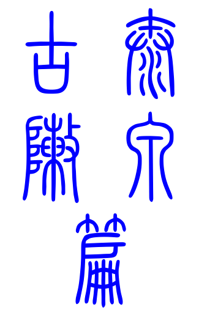
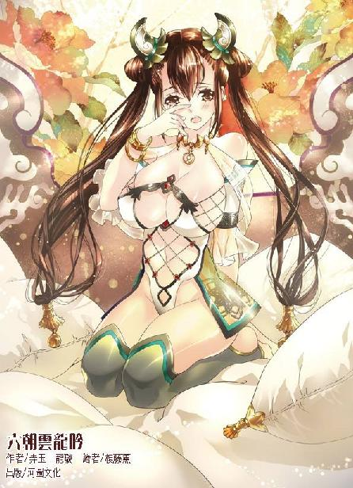

第42集·九天玄兽
太泉古阵篇（1/7）
出版日期：2013-02-04
【本集内容简介】
北三朝人马及胡人仿佛赶集似的纷纷闯入太泉古阵，殇侯还神神秘秘地告知程宗扬，“听说岳鹏举就在太泉古阵之内！”
在苍澜镇上吹牛吹到盘古开天地的徐君房绘声绘影地描述阵内凶险，一入其中，程宗扬顿觉带着武二和殇侯这等高手竟未必有用处。因为太泉古阵根本就是深藏地下的高科技未来都市，只要熟悉都市规则并驾驶“九天玄兽”一路狂飙，完全不需要五级以上高手出力。
众人以为一路顺利，变异的兽群便狂奔而来！
※ ※ ※ ※ ※

封面人物：乐明珠
夜空下，一株玉灵果从泥土中悄然钻出，蜷曲的枝叶慢慢舒展开来，嫩绿的叶片映射出天际璀璨的星光。
远处，一只白鹿昂起头，警觉地看看四周，然后迈着优雅的步子穿过洒满月光的树丛。
夜色下的湖泊犹如银镜，映出白鹿温柔的眼睛。白鹿低下头，鹿吻在水面上荡起一圈涟漪。
忽然“哗啦”一声，一个男子从树林中钻出，他一手握着单刀，下巴胡子拉碴，身上散发着浓浓的汗水和血腥气息。白鹿后退一步，接着灵巧地跃起，消失在树丛中。
程宗扬看也不看，便一刀砍断那株拦路的玉灵果，用刀背挑着甩开，回头叫道：“在这儿呢！”
几匹走骡从树林中鱼贯而出，清一色腿长体健、皮毛乌黑，磨得发亮的蹄铁足有碗口大小，只不过中间夹着一头灰不拉叽的草驴，怎么看怎么猥琐。
小紫侧身坐在黑珍珠上，天真纯美的脸庞足以令星月失色。在她鞍旁挂着一只皮囊，雪雪趴在囊口，露出圆乎乎的脑袋。后面的朱老头盘着一条腿坐在驴背上，两手笼在袖中，一脸得意地说道：“我就说嘛，山脚有水！咋样？大爷一口唾沫一个坑！说啥是啥！”
萧遥逸骑着他的白水驹，懒洋洋道：“老头，这一路看到野猪了吗？”
朱老头嗤了一声，“鹿台山哪儿来的野猪！”
“知道为什么吗？”
朱老头一怔，“为啥？”
“都被你吹死了！”萧遥逸啐道：“就你带的这鸟路！三天摔了四头骡子，丢了七成的盐，一半的粮食！你还有脸瞎白话！”
朱老头讪讪道：“也不能全怨我啊。领路的不是小程子吗？”
程宗扬一头扎进湖里，痛痛快快喝了个饱，然后一边甩着脑袋上的水，一边没好气地说道：“死老头！再啰嗦就滚蛋！”
“急了不是？”朱老头赶紧拿着水囊去盛水，一边道：“大爷知道你这一路辛苦，嘴上没说啥，可心里疼着呢。”
“我不跟你扯淡。你就说什么时候能到苍澜吧！”
朱老头眨巴着眼，用商量的口气道：“总得有个……五六七八天吧？”
程宗扬一听都气笑了。从临安出发时，他们为了赶路，带了十匹上等的河东马。到了夷陵，程宗扬考虑到要走山路，把马匹换成更能负重的走骡。结果自从进了鹿台山，这一路就没顺过。朱老头带的路全是些山羊都不走的僻路、险径，头一天就摔了两匹走骡。
程宗扬入山前算过，五个人来回一个半月，加上武二那个饭桶，至少要四百斤粮食，因此用了两头走骡带了四石粮——结果摔的就是那两头。要不是自己眼疾手快抢了一石下来，大伙儿这会儿就该喝西北风了。
武二郎嘴里叼着根细枝，抱着膀子，哼着小曲从林子里晃晃悠悠地出来，悠闲得跟刚赶完庙会一样。走南荒时自己就见识过这厮的嘴脸，一贯的好吃懒做，偷奸耍滑，眼瞧着油瓶倒了——只要不是苏荔家的油瓶——他都敢不扶。想让他干点活儿，比从他口袋里掏钱都难。
“呸！”武二吐掉树枝，扯着衣角道：“这衣裳不错！”
程宗扬又有种翻白眼的冲动。上次走南荒自己吃过苦头，别管多漂亮体面的衣服，进了林子就是挨撕的命。这回自己早早做好准备，用最结实的帆布做了两身衣服，结果被武二看到，非涎着脸也要了一身。于是武二爷这一路就穿着浑身上下全是口袋的牛仔登山服招摇过市。再配双登山靴，直接可以做男装广告了。
小狐狸那盏灯也不省油，仗着自己是病号，没人敢指使他干活。他倒不肯穿山寨版牛仔装，仍是一身足以让姑娘们抛媚眼的锦衣华服。和他一比，大伙儿全成跟班的了。不过这小子就有本事穿着一身白衣钻山过岭，还不皱不破，跟新的一样，再拉风别人也只能干眼红。
刚才又有一头走骡磨破蹄子，俩壮丁带一个老头围着骡子直乐，没一个动手的。程宗扬只好自己动手宰了骡子取肉，弄了一身的血。现在还剩下五头骡子，带着一石粮，一些盐巴、干货，再加上三顶帐篷和其他行李。如果再损失牲口，恐怕就要用坐骑来载货了。
众人已经断水一整天了，武二不嫌腥，程宗扬这边杀骡，他那边喝血解渴，喝完又包了一大块骡肉，自己烤了吃了个肚圆，这会儿才剔着牙出来。
程宗扬把一只铁锅扔给武二郎，“淘米去！”
武二眼一瞪就想发飙，看到程宗扬的表情又咽了回去，气哼哼打了水，盛上米淘着。
朱老头看着风头不对，往草驴后一缩，接着就被程宗扬揪出来，“把这块肉洗了！剩下的用盐腌上！敢啰嗦一会儿吃烟去！”
朱老头嘟囔几句，还是老老实实洗了肉，把剩下没沾过水的抹了盐腌着。小狐狸这会儿也突然勤快起来，自己在湖边找了块石头，光着膀子“哗哗”地洗着衣服。
程宗扬张开四肢往湖边的草丛一躺，“死丫头！过来给我捶腿！”
“哎！”小紫脆生生应了一声，接着“砰”的一声，骡背上掉下来一个沉重的袋子。接着一个黑乎乎的东西钻出来，一路怪响地奔到程宗扬身边，挥着两条长臂，“呯呯”地给程宗扬捶腿。
程宗扬只挨了两下就受不住了，抱着腿跳到一边，“干！这是剁馅儿的吧！”
正在洗肉的朱老头一听就慌了，“有饺子给我留一口！”
武二郎道：“啥眼神儿！还饺子馅呢。萧子！你怎么跟个娘儿们似的？洗得没完了？”
萧遥逸抖着衣服道：“二爷，你那一条裤衩半年不换的作派我可学不来。”
“都闭嘴吧！”
程宗扬架了几根树枝，挂上铁锅，然后生火做饭。
程宗扬一边用火镰打火，一边自嘲道，自己真成保姆了。早知如此，就该把秦桧带来。不过临安的局面刚刚铺开，钱庄、粮行、地产，每一件事都千头万绪，不能不留一个得力的手下照应，自己手下数来数去，除了秦桧，再没有第二个人能挑起大梁来。
秦桧动不得，祁远也是无法替代的，建康一摊子事还得他来招呼自己才放心。好在晋宋两国的门路已经打开，王茂弘既然委托张少煌给自己捎话，至少在灾荒平稳渡过之前，晋国不会有大动作。
至于宋国，自己临行前，特意招来刘娥——为此自己已经作好准备等着死丫头奚落，结果死丫头什么都没说。
让刘娥侍寝，自己还真不是好色。实在是她压抑在内心的惶恐和那种无处依靠的惊惧，让自己心生不忍。岳鸟人拍拍屁股消失得无影无踪，全然没有在意他这种丝毫不负责任的行为，给刘娥留下怎样一种被抛弃的恐惧。
十余年来，刘娥守着那个与宋室毫无血缘关系的陛下，时刻都在担心骗局一旦被揭破的可怕后果，而始作俑者始终毫无音信。当自己和小紫先后出现，她就像捞到一根救命稻草一样紧紧握住，甚至连起码的体面都顾不上。
自己如果对她不闻不问，或者还和以前一般把她当长辈敬而远之，真不知她的失落感会有多强烈。
当自己在榻上看着这个曾经属于岳鸟人的美妇眉梢眼角流露出那番化不开的喜悦和满足，程宗扬真不知道自己是太过无耻还是太过善良。他甚至想到，刘娥同意贾师宪对江州用兵，也许还存着逼岳鸟人出现的念头。
程宗扬小心地没有去触动宋主的秘密。没有人能承受得起宋主身世暴露的后果，刘娥不能，自己的盘江程氏不能，就是贾师宪和高俅也不能。
离开宋国前，自己给贾师宪、蔡元长、韩节夫、史同叔和高俅各送了一份重礼——盘江程氏的股东大会就是想给这些宋国现在和未来的重臣一个信号：世道太平，大家才好一起发财。
程宗扬从来不相信世间会有什么真正重要的秘密能够永远保密，即使没有黑魔海，也少不了其他有心人。在程宗扬看来，真正重要的不是保密，而是秘密还没有公开之前，抢先化解掉可能引发的危险。相信大家都是聪明人，纵然黑魔海已经拿到宋主身世的秘密，没有他们的配合，也掀不起太大的风浪。
真正让程宗扬担忧的是另一个人：大貂珰秦翰。
和郭槐等人不同，秦翰早早就被打发出宫，数十年来南征北战，与岳鹏举崛起的轨迹没有交集——他对宋室的忠诚反而成了宋国最大的隐忧。
程宗扬没有掩饰自己对秦翰的忌惮，刘娥的反应也与自己想象的如出一辙：赐秦翰一杯鸩酒。但不明不白地干掉这位功勋卓著又没什么过错的大貂珰，程宗扬自问还狠不下这份心肠。最后他拒绝了刘娥赐死的诏旨，只借着秦翰受伤的机会，以安抚功臣为名，重重给了份赏赐，顺便解除了秦翰的兵权，把他远远打发出去办件闲差。
消除了这件隐患，程宗扬才安心上路。等找到赤阳圣果，解决了小狐狸的伤势，自己还要穿越半个六朝，赶往汉国去挨云三爷和云六爷的骂。希望冯源、哈迷蚩和高智商那小子能把首阳山的铜矿拿到手，到时好送云家一份大礼弥补自己的过错。
死丫头的侍奴都留在临安，由雁儿这半个主人管束，卓云君却北上龙阙山，赶赴龙池。不知道死丫头这些安排到底在算计什么，但程宗扬有种预感，太乙真宗的好日子只怕到头了。
“老头，现在过了鹿台山，等到了苍澜，太泉古阵还有多远？”
“太泉古阵就在苍澜。”朱老头道：“苍澜本来是山谷一片平地，进出太泉古阵的人都得在那儿落脚。去的人多了，就成了个镇子。太泉古阵就在镇外。”
萧遥逸道：“你不是说苍澜是个鬼地方，怎么还有人住呢？”
“这说来就话长了，想当年……”
没等朱老头卖关子，程宗扬便打断他，“长话短说！”
朱老头一肚子话被他憋了回去，脸色也不大好看，哼哼叽叽道：“哪儿的水土不养人呢？南荒那鬼地方还有人呢，苍澜能住人有啥奇怪的？”
萧遥逸道：“镇上住的都是苍澜本地人？”
朱老头趁机打开话匣子，“哪儿的人都有！苍澜周围雾气常年不散，本地人都叫雾瘴，每过一次都是要命的事。有些人一时间进不去太泉，又不肯罢休，只好在苍澜住下。有的在太泉里受了伤，没办法再穿过雾瘴回来，只能留在苍澜常住。一来二去，那镇里什么人都有，镇上也没什么规矩，谁的拳头大，说话就算数。不过镇上人也知道靠山吃山的道理，如果没有外面人来，也就没有苍澜镇，所以只要不招惹镇上的人，大家也相安无事。”
程宗扬扭头道：“武二，你闯荡天下这么多年，没去过太泉古阵？”
武二郎懒洋洋道：“谁乐意去那鬼地方？小子，二爷认识你算倒了大霉了，去了趟南荒不说，去太泉也把二爷叫上，真以为二爷是你家长工啊？”
如果有选择，程宗扬宁肯牵条狗也不想牵武二郎这头大牲口。但太泉古阵危险重重，身边不能没有个打手。金兀术和豹子头留在临安坐镇金库，卢景北上洛都，秋少君和崔茂要守护月霜，实在抽不出人来。
自己刚是五级的修为，能照顾小紫就不错了。死老头修为深浅不好说，可那老东西就算有王哲的本事，照样也是个不靠谱的，不定什么时候就掉链子。武二虽然嘴臭了点儿，再怎么说也有六级的修为，真到了危急关头，还能豁出去拼一把，算来算去，成了自己唯一的人选。
程宗扬板着脸道：“一天两枚金铢，从太泉回来就给。二爷，你都穷得要当裤子了，不趁这个机会挣一笔，怎么好娶苏荔过门呢？”
武二郎悻悻道：“小子，你要敢忽悠二爷，二爷非把你打得连紫丫头都认不出来！”
小紫笑道：“我给你四枚金铢，你打给我看好不好？”
武二郎愤然道：“二爷是那种人吗？这块肉是我的！姓萧的，你敢抢！”
萧遥逸收回手，接着潇洒地一口唾沫吐上，然后在武二郎瞪圆的牛眼下悠哉悠哉地抓起来，埋头一通猛啃，一边还贱兮兮道：“好吃好吃！二爷，你也来一口？”
赶在武二发飙之前，程宗扬把一团脏衣服甩到小狐狸脸上，“少废话！赶紧吃完，把这几件衣服给洗了！”
“武二的衣服凭什么让我洗啊！”
武二郎嘿嘿笑道：“你不是洗得干净吗？要不二爷再给你加条裤衩？”
萧遥逸连忙把衣服塞到身后，“就这些！多一件萧爷死给你们看！”
※ ※ ※ ※ ※
次日清晨出了鹿台山，终于找到大路。程宗扬牵着走骡在前领路，萧遥逸银鞍白马跟在后面，两人一个灰不拉叽的帆布牛仔服，一个上好的贡绸丝袍，活脱脱一副马夫与公子哥儿的派头。只不过萧遥逸鞍旁还架着两根树枝，上面挑着几件未干的衣服迎风招展，让武二很是冷嘲热讽一番，说小侯爷骑的这是带翅膀的天马，拉风得都快飞起来了。
萧遥逸只回了他两个字：“村牛！”
上了大路，渐渐能看到行人，大多都是背弓带矢的劲装大汉，三五成群，看样子都是去苍澜的方向。道上相逢，那些江湖汉子没有半点遇到同路的喜色，反而各自戒备。
无论宋国还是昭南，疆界都没有越过鹿台山，简单说，这里就是没王法的地界。偶尔看到有人交手，不想惹事的程宗扬早早便绕开了。他这次带的骡马多，虽然折损了一半，还剩下两马一驴五头走骡，也算一笔不小的财富。如果不是武二的样子看上去很能打，恐怕早有人出手了。
第二天起，周围的景物渐渐变得荒凉，树木越来越少，接着消失，然后连青草也变得稀疏。到第四天，干脆连草都看不到，眼前只有裸露的红土，成了彻头彻尾的不毛之地。要不是带足了粮食和饮水，众人早就被眼前的荒凉逼了回去。
第四天傍晚，众人终于到达苍澜所在的浮玉山，才算见到一点绿色。由于明天要越过雾瘴，程宗扬决定在山下宿营，休养一晚。
抱着相同念头的显然并不止自己一个，夕阳还未落山，山脚宿营地已经有了四五伙人，把个不大的营地占得满满的。
“老头，你不是说这地方一年到头也没几个人来吗？这一路咱们可碰见不少人了。”
朱老头眨巴着眼道：“兴许是赶上镇里开集？”
“什么开集？”
“镇上人也要粮食、盐巴、用医用药。苍澜镇不产别的，就守着一个太古泉古阵，留在镇上的人靠着从里面得的东西和外面的客人交易，换些衣料吃用。”
“你就扯吧。你瞧这些汉子像是赶集的吗？”
“那可说不准。”
程宗扬懒得跟他瞎扯，找了处背风的位置先把钎子打上，拴好骡马，然后打上木楔，准备搭起帐篷，身后忽然有人喝道：“这里已经被我们铁马堂占了！劳驾换个地方！”
朱老头一缩脑袋，钻到驴屁股后面。
程宗扬赶了一天的路，早就疲惫不堪，闻言顿时心头火起，沉下脸道：“先来后到，还是劳烦尊驾换个地方！”
几名劲装大汉脸色不善地过来，为首一人挑起拇指指着自己胸口，傲然道：“我是铁马堂副堂主铁中宝！叫你主子过来说话！”
程宗扬一怔，这才意识到他们把小狐狸当成自己这群人的主子了，他没兴趣和这些人废话，一转身，利落地叉手道：“请爷示下。”
萧遥逸更干脆，扬起马鞭，“武二！扁他！”
铁中宝怒喝一声，拔步冲来。但有人比他更快，只见一条猛虎般的大汉从那公子哥儿身后跃出，身体一横，直接把铁副堂主撞得倒飞出去。
铁中宝飞出数丈，“砰”地摔在地上，又像皮球一样连翻了几个跟头，趴在一摊烂泥中，不知死活。
武二郎摸了摸颈后的虎斑，眼中凶光四射，接着猛地伸长脖颈，发出一声震耳欲聋的虎啸。那几名铁马堂的汉子还没动手就被吓住了，听到这声虎啸，顿时双腿一软，坐倒在地。
武二这一下震慑全场，周围投来的目光少了几分贪婪，多了几分畏惧。敢来太泉古阵的大都是亡命之徒，苍澜又是无人管的化外之地，看到这伙人有男有女有老有小，都存了几分歹意，见到武二郎出手才收敛起来。
武二郎在外面扬威立万，程宗扬连头没抬，他找好位置，往四角打下木楔，撑好帐篷，然后一手扶着小紫，一手从黑珍珠马鞍后取下一只小巧的铁皮箱，扛在肩上送进帐篷。
帐内铺着隔潮的狼皮垫，小紫踢掉鞋子，赤足坐在垫子上，然后张开双手。
程宗扬像散架一样倒下来，一头扎在小紫膝上，嘟囔道：“奶奶的，可累死我了……”
小紫轻柔地替他按摩着头部，“累了你就睡好了。”
“哪儿敢睡啊。死老头屁事不管，武二那厮只管自己吃饱。小狐狸受了伤，就是个绣花枕头，蒙人还行，风大点儿就能把他吹倒。”
“闭上眼，别说话。”
程宗扬躺在小紫腿上，呼吸渐渐平静下来。
忽然武二伸头进来，“咋不做饭呢？”
程宗扬抄起一只靴子丢过去，“你大爷的！”
武二郎一把接住靴子，“我不就问一声嘛。”看到小紫白了自己一眼，立刻拍着胸膛道：“老程你歇着！今儿的晚饭包在我身上！”
萧遥逸抱着手臂，口气风凉地说道：“哎哟，二爷做饭？我没听错吧？”
“谁说做了？小子来吧，瞧二爷的！”
武二郎大眼扫了一圈，然后大摇大摆朝旁边一处帐篷走去。
那处帐篷只有三个人，一个老者带着两个年轻后生，见他过来都戒备地把手伸到背后，握住兵刃。
武二郎哼了一声，“姓铁的呢？让他出来见我！”
老者把两名后生按在身后，然后抱拳道：“尊驾明鉴，铁马堂在西边，和在下不是一路。”
“少来蒙二爷！瞧你们的打扮，难道不是一路的？”
老者赔笑道：“难怪尊驾认错。我们百琴谷和他们铁马堂虽然都是唐国人，但铁马堂在凉州，凉州盟四堂八会排名第七，堂主铁雄山，这次来的是他侄儿。百琴谷在凤州，与绿林好汉不是一路。”
武二郎道：“二爷在边塞待过，哪里来的凉州盟？”
老者耐着性子道：“这些年边塞不靖，各门派结盟自保。凉州盟的总盟主是凉州本地的丹霞宗，在鹿台山还见过宗内的左护法，大概明日便到……”
老者絮絮叨叨说了半晌，终于打动了武二郎。他哼了一声，“既然如此，便饶你们一次！”
三人都松了口气，赶紧抱拳打发了这个瘟神。
看武二郎空着手出来，萧遥逸一脸纳闷，“二爷，你这是唱的哪一出？”
“瞧着吧！”
武二郎一脸凶神恶煞地闯进铁马堂营地，一名汉子硬着头皮迎上前去，还没开口就被武二郎一把推了个跟头。
“哪里来的蝥贼，也敢骑到二爷头上！”
被武二郎闯上门来一通大骂，铁马堂众人都涨红了脖颈，这些汉子都是厮杀惯的，虽然技不如人，也不能任人欺负，当下无声地交流着眼神——“跟这孙子拼了！”
只听武二郎嚷道：“要不是左护法求了几次，二爷肯往这鬼地方来！敢跟二爷别苗头，当二爷是好欺负的！”
武二郎满口骂骂咧咧，浑没注意周围人都吃惊地张大嘴巴。终于有人憋出一句：“左护法请来的？”
武二郎横着眼道：“二爷和丹霞宗掰不开的交情！左护法和二爷的交情更是不一般，谁要和丹霞宗有仇，只管往二爷身上招呼！要皱一皱眉头，二爷就不算好汉！”
铁马堂的汉子都叫了起来，“我们是凉州盟的！”
“丹霞宗是我们凉州盟总盟主！”
“大水冲了龙王庙了！”
铁中宝本来躺着装死，这会儿也睁开眼睛，叫道：“一家人啊！大哥！”
“你们是凉州的？”
“凉州铁马堂啊大哥！”
武二郎“哎呀”一声，“兄弟，这！这！这怎么说呢！”说着推金山倒玉柱地就要往下拜。
铁中宝赶紧爬起来死命拦住，“是我有眼无珠！怨不得大哥！”
“不成！”武二郎退开一步，红着眼扯开袖子，露出肌肉虬结的手臂，一手拿起牛耳尖刀，“我这手得罪了兄弟！今天三刀六洞给兄弟赔罪！”
众人急忙抱住武二郎的手臂，“不可！万万不可！”
武二郎叫道：“别拦我！让我给兄弟赔罪！”
铁中宝泪流满面，他一把扯开衣服，拍着胸膛道：“二爷！你要扎！就往这儿扎吧！”
“铛啷”一声，尖刀脱手，武二郎把着铁中宝的手臂叫道：“兄弟！”
“大哥！”
“不打不相识啊！”
“啥都别说了！”
程宗扬没看到这一幕，他掀开帐篷出来，正看到武二郎雄赳赳扛着一只熟羊回来，后面铁马堂的汉子抹泪相送，不禁愕然道：“这武二！人才啊！”
武二郎把羊一放，得意洋洋地说道：“紫丫头，尝尝二爷烤的这羊！这周围几十里连根草都没有，两天没吃热饭了吧？”
萧遥逸扯了条羊腿递给小紫，然后自己捞了一块，一边埋头大吃，一边道：“赶紧吃！吃完就走！人家说了，左护法在后面！带着四堂八会好几十个高手，马上就到！再不走就露馅了。”
程宗扬看着自己刚扎好的帐篷，半晌才叫道：“我干！”
※ ※ ※ ※ ※
黑暗中，嶙峋的怪石犹如怪兽，朱老头凑过去看了半晌，然后嚷道：“就是这儿！再往前就是雾瘴，要天亮才能走！”
众人停下来，朱老头一边拴驴一边道：“我说二啊，大爷可被你坑苦了，这山上连个坐的地方都没有……”
“要不是二爷，你们能吃上热羊肉？”武二郎也知道这回玩脱了，觍着脸嚷了一声，然后猫腰挨着块石头蹲下，不一会儿就鼾声大作。
连夜上山，众人都有些精疲力尽。朱老头远远蹲在队尾，笼着手靠着驴子打眯瞪，萧遥逸却打开口袋，把所剩不多的粮食一把一把喂给骡马。
程宗扬朝他竖了竖拇指。这些人里其实小狐狸才是最心细的一个，小紫倒也能想到，只不过所有的骡马全饿死她也不在乎。
程宗扬把狼皮垫子铺在岩石上，对小紫道：“还有一两个时辰就天亮，睡不成了，坐一会儿吧。”
小紫抬起头，“一颗星星都看不到呢。”
“老头说，这里的雾瘴有好几里深，白天进去都伸手看不到五指，只有谷口这一条路通往苍澜。这地方恐怕就是雾瘴边缘了。”
程宗扬伸手抓了抓，指间隐约有薄薄的雾气流动，带着湿冷的感觉。
“一会儿过雾瘴的时候拉着我的手，千万别走散了。”
“不要，”小紫抱膝道：“人家跟着你，程头儿怎么好偷香窃玉呢？”
“喂！”程宗扬一脸不乐意地说道：“别把我说得那么不堪！”
“谁临走的时候还去翠微园偷吃呢？”
“我是去跟月霜告个别好不好？”程宗扬厚着脸皮道：“只不过顺便替她治治寒毒——你也不想月丫头冻成冰棍吧？”
小紫眨了眨眼睛，“不是那些荆溪女人吗？”
程宗扬怔了一会儿，忽然道：“我帮小狐狸喂驴去！”说着跳起来，一溜烟跑掉了。
萧遥逸抓了把粮食喂到走骡嘴里，然后拍了拍牲口的脖颈，“情形似乎有些不对啊。”
程宗扬挑起眉毛，“你也看出来了？”
萧遥逸道：“太泉古阵几个月也不一定有人来，咱们这趟遇见的人也太多了些。”
程宗扬也留意到往太泉古阵的人多得蹊跷，摸着下巴道：“难道是有什么热闹被咱们赶上了？”
萧遥逸道：“刚才我和武二走了一趟，见到来的人大都是北三朝的打扮。宋国离得最近，反而没什么人。晋国更是一个都没看到。”
程宗扬想了一下，“不管什么热闹，不凑也罢。到了苍澜，咱们就直接进太泉古阵，找到赤阳圣果就走——喂，你怎么样？”
“来之前五哥和六哥替我续过真气，动真格的不行，装装样子还没问题。”萧遥逸跃跃欲试地说道：“有热闹都不看，圣人兄，你对生活也太没热情了！”
“有那点热情我先保住命再说！”程宗扬打量了他一眼，“小狐狸，你是不是半个月没风流，按捺不住了吧？”
萧遥逸撇了撇嘴，“何止半月？自打离开江州，我就没碰过女人！”
程宗扬一怔，“你在玉露楼都干嘛了？难道……”
萧遥逸叹了口气，“白天睡觉，晚上挖地，我容易嘛我！”
“干！秋小子那天说出来，我就觉得不对，结果被你岔开了——你跑青楼挖什么地呢？”
“跟你说也没关系。”萧遥逸梳理着白水驹的鬃毛，一边说道：“江州这一战，孟老大其实是不同意的。玄武湖一战，我就没得到允许，当时看情形不对，直接引禁军入宫。事发仓促，准备也不足，最后还是孟老大替我擦屁股，和几位哥哥一起截住黑魔海的援手，算是打赢了玄武湖一仗。”
“当初岳帅宣布解散星月湖大营的时候，曾说过没有他的命令不许再集结，所以孟老大一直压着大家，等待岳帅的消息。”萧遥逸道：“可我们已经等了十五年，再等就没有机会了。”
“玄武湖之战后，我拿到了江州，打算树起星月湖的大旗，告知天下，岳帅的部属还在。你可能不知道，当时我们兄弟大吵一通，这一回五哥、六哥也站在我们这边，只有老大和四哥不同意。”萧遥逸把脸埋在马鬃里，低声道：“三哥不在了，孟老大自己也压不住我们五个。最后各退了一步，孟老大同意星月湖大营集结，但江州名义上仍然属于晋国。”
“江州这一仗我越打越心惊，打到后来我才知道孟老大有多英明。如果没有晋国的名义，宋军毫无顾忌地截江攻城，就算能守住江州，大营的兄弟们肯定也伤亡惨重。”萧遥逸呼了口气，“圣人兄，你不知道你在临安那些天，我天天都盼着你的消息。尤其是云家翻脸之后，援助的物资一下全断了，我差点吐血，别说云家大小姐，你让我娶云家的老母猪我都愿意！”
程宗扬没有笑，江州一战，如果不是宋军有所顾忌，鹿死谁手还真不好说。
“宋军撤退之后，大家都松了口气，孟老大却把我叫去，狠狠骂了我一顿。”萧遥逸靠在马鞍上，带着一丝自责的苦笑道：“孟老大总是这样，有些事他虽然不同意，但我们都想干，他就咬牙带着我们干完，然后自己把责任扛下来。这一次他骂我，一是心痛兄弟们的伤亡，更要紧的是担心我们强占江州的举动，打乱了岳帅的布置。”
程宗扬仔细听着，听到这一句不由道：“岳帅还有布置？”
“岳帅没有透露过，但我们猜他肯定有安排。至于什么安排，”萧遥逸摊开双手，“只有岳帅出现才会知道。对了程兄，江州之战打完，我们兄弟商议过，功劳最大的毫无疑问是你。你的粮战足以顶得上一个星月湖大营。”
“等会儿，你越扯越远了啊，这跟你跑临安挖地有什么关系？”
“别急，我马上就说到了——孟老大不是骂了我一顿吗？骂完他告诉我，岳帅曾经透露过，他在临安留了某些东西。孟老大借着鹏翼社的掩护，在临安待了多年，把岳帅待过的地方都找遍了，一直也没找到。我这次要来临安，他才告诉我这件事，让我留意寻找。”
“孟老大追随岳帅最久，对岳帅待过的地方也知道得最为详细。连他都找不到，会是在什么地方？我仔细想了一路，有个地方孟老大很可能漏掉了。”萧遥逸道：“玉露楼。岳帅在临安时，最喜欢去的就是这处青楼。”
难怪小狐狸一到临安就直奔玉露楼，原来是冲着岳鸟人的遗物去的。程宗扬道：“找到了吗？”
萧遥逸摇了摇头，“青楼里的人换得太快，现在楼里根本没有见过岳帅的。我和萧五找遍了玉露楼，也没找到线索。”
程宗扬却知道他们错过了一个地方——迷楼。岳鸟人确实留了些东西，但只有一把不知道用在什么地方的钥匙和一句没头没尾的话。
萧遥逸像想起来什么似的说道：“不过有件事挺邪门。玉露楼有处院子说是被人包下来了，但我和萧五进去过，里面根本没人。”
程宗扬一怔，连忙道：“不会是梨花院吧？”
他说的是李师师所在的院子，萧遥逸道：“不是。是另外一处，听说是个大官包下来的。”
媚娘！程宗扬心里蹦出这个念头。先是人家投奔到府上，然后把人送回来，接着又用个空院当掩护，悄悄把人带走——高俅这到底是唱的哪一出？
萧遥逸忽然凑过来，压低声音道：“圣人兄，你对紫姑娘可真不错。我们兄弟算是放心了。”
“废话！”程宗扬一脸悲愤地说道：“我都给她当牛做马了，你们还有什么不满意的？我说死狐狸！你给她送的狗是哪儿来的！”
看到程宗扬怒火填膺的样子，萧遥逸不禁一愣，“那条小狮子狗？这说起来就话长了。当年岳帅让我回建康，我不乐意，整天又哭又闹，岳帅那时候养的狗正好生了只小狗，岳帅只好把那狗送给我，才打发我回来。我养了不少年，那狗一直没怎么长，正好紫姑娘也喜欢，我就送给她了。怎么了？”
萧遥逸忽然想起来，“对了，岳帅交待过，小心别被那狗咬到——圣人兄，你不会是被它咬了吧？那小家伙牙齿有毒，被它咬到，只有南荒一种鱼的鳃液才能解。岳帅当初去南荒，就是找这种鳃液的。”
程宗扬无语望天，自己被小贱狗咬这一下，还真不冤。岳鸟人从南荒拐走碧姬，八成是因为和自己一样被咬过。
两人一边说话，一边喂着骡马，不知不觉走到队尾。程宗扬脚下忽然“咯”的一声，似乎踩到什么东西，接着便听到朱老头一声惨叫，抱着脚跳了起来。
程宗扬先声夺人，“好狗不挡道！朱老头，你挡我的道什么意思！”
朱老头刚想开口，眼睛一下瞪得溜圆，他一手抱着脚，一手指着萧遥逸，嘴里“哎哎”地叫着，像是急得说不出话来。
萧遥逸莫名其妙，他左右看了看，然后抓了把粮食去喂朱老头的草驴。
“别喂！”朱老头眼泪都快下来了，哽着嗓子道：“粮食啊……”说着扑过去抱住那只空了一半的粮食口袋。
萧遥逸纳闷地说：“我知道这是粮食啊。马上要到苍澜了，粮食到镇上再买，这些牲口几日都没吃饱过，再饿就掉膘了。”
“粮食——金贵啊！”朱老头抱着粮袋不撒手，心疼地说不出话来。
“拿粮食喂牲口，打仗时候的常事，也没见你哭天抹泪的。得，”萧遥逸拍了拍手，“反正就剩你这头驴了，爱喂不喂。”
“别吵了！天都亮了！”程宗扬眯起眼，望着天际一抹鱼肚白，“我领头！小紫，你跟着我！老头走中间！小狐狸第四个，武二你断后！大伙把骡马的缰绳都连在一起！千万不要走散了！”
这几位爷伺候起来比一个军都累，好不容易整好队伍，程宗扬一手拉着打头的走骡，一手挽着小紫，朝着谷口走去。
从山梁往下望去，整座山谷都被浓雾笼罩，缭绕的雾气接天蔽日，仿佛与高天上的白云相连。浓雾边缘界线分明，就像一道雾墙，竖在昨晚朱老头打量过的那块岩石处。
程宗扬把手伸进雾中，立刻感受到一股冰冷的寒意。看似轻柔的雾气竟然温度奇低，寒意刺骨，他小心踏入雾中，身体仿佛浸在冰水中一样，不由得狠狠打了个冷战。
程宗扬连忙催动丹田中的气轮，抵御寒雾的侵蚀。难怪世人把太泉古阵视为畏途，单是穿过这层雾瘴，就不是易事。修为略低、体质稍弱，恐怕都扛不住这种寒冷。
越往里行，雾气越发浓郁，没走几步，眼前就只剩下浓浓的白雾。雾气仿佛流淌的牛奶或者被涂抹过的蛋清，将视线完全阻隔，走动时，甚至还能感受到雾气黏性的质感。
忽然“咔”的一声轻响，脚下似乎踩碎了什么，程宗扬警觉地停住脚步，左手把缰绳绕在臂间，接着握住刀柄。
一个绿幽幽的光点出现在视野中，接着又是一点，光点以极慢的速度缓缓升起，明灭间就像一只无形的怪兽张开的眼睛。
一股冷汗从颈后涌出，沿着背脊直淌下来，程宗扬长刀出鞘，接着把小紫拉在背后，右手也握住刀柄。
“嘿嘿，是磷火。”背后响起朱老头猥琐的声音，他捞到那只粮食口袋，心情好了许多，这会儿道：“这路上死的人没有一千也有八百，八成是谁的脊梁骨被你踩着了。”
死老头猥琐的笑声这会儿听起来却让人分外踏实，程宗扬呸了一口，一边松开刀柄，“干！”
寒雾像冰水一样涌入鼻腔，将气管、肺部都冻得隐隐作痛。程宗扬一边运功御寒，一边往前走着，每隔一段就要喊一声：“老头！小狐狸！武二！”
随着雾气渐浓，众人的声音也仿佛被寒雾阻隔，变得遥远而模糊。程宗扬紧紧拉住小紫的手掌，虽然明知道看不见什么，仍然努力睁大眼睛，寻找着视野中可能出现的一丝一毫的影子。
一刻钟后，众人已经进入雾气最浓的核心位置，浓雾甚至使身体感觉到一股浮力，仿佛一纵身就能在雾中游泳。就在这时，身后突然传来一声大叫，却是小紫怀中的雪雪正伸长脖颈，对着浓雾狂吠。
头顶传来一阵沉闷的轰鸣声，接着朱老头叫道：“亲娘咧！落石！”
耳边听着轰鸣声越来越近，眼前却只有白雾，程宗扬顾不得多想，一把摘下鞍侧的龙鳞盾，遮在小紫头上，自己抡起长刀，对着声音传来处重重斩出。
钢刀“铛”的一声巨响，一股沉重的力道直击下来，整条手臂都震得失去知觉。内息猛然一窒，接着喉头泛起一丝腥甜的气息，经脉已经受伤。程宗扬咆哮一声，遭到重击的气轮陡然加速，一道光球冲开受创的经脉，击向落石。
落石终于改变了方向，接着身边传来骡马的嘶鸣声，却是骡队被石头击中。程宗扬急忙抢下骡背的行李，接着便听到骡鸣声直坠下去，他顿时出了身冷汗，这才知道自己一行人正站在悬崖边缘。
雪雪的叫声越来越急，程宗扬咽下鲜血，把行李扛在肩上，拖着小紫贴着崖壁拼命前行，避开危险的落石地带，一边叫道：“小心悬崖！武二！小狐狸交给你了！朱老头，你来过！怎么回事！”
朱老头带着哭腔叫道：“我的亲驴哎！”
突然间一股凶恶阴狠的气息从头顶直压下来，浓雾中伸出一只狰狞的脚爪，抓向程宗扬的面门。
程宗扬闪电般劈出刀锋，那只脚爪却突然缩回，旁边雪雪的叫声忽然一顿，那妖怪“嘎”的一声大叫，接着羽毛纷飞，带着刺鼻的血腥气扑到程宗扬身上。
程宗扬将小紫搂在怀中，双刀如电，不断斩开浓雾，头顶的妖气越来越浓，数不清的怪鸟雨点般袭来。
程宗扬感觉自己就像陷入噩梦之中，一个人在浓雾中与看不到的对手搏杀。本来他想着今天就能进苍澜，特意换了身普通衣物，把那套硬得能砸死狗的帆布牛仔服收了起来。结果没几下一身新衣就被怪鸟锋利的脚爪撕碎，手臂、肩膀、脖颈、额头都鲜血直流，伤口传来火烧般的痛楚。有几次他都几乎要放弃，最后还是咬牙硬撑下来。无论情形如何危险，他始终没有松开小紫。
视线和声音都被浓雾阻绝，不知道武二等人是不是同样遭到了袭击。好在自己还有一个帮手，虽然看不到背后的情形，但雾气诡异的波动带来阵阵的妖气，显然那条小贱狗已经现出三头魔犬的真身，在与雾中的鸟妖厮杀。
忽然头顶传来一声娇叱，一道剑气匹练般卷起，声势赫人，连浓雾都被劈开一线。鲜血飞溅中，那些怪鸟尖鸣着飞开。
程宗扬靠在岩石上，将小紫抱在怀中，胸膛像风箱一样起伏着，“呼呼”地喘着气。
头顶的岩石上，一个火红的影子一闪，然后被浓雾遮蔽。接着一个苍老的声音道：“竟然是三足乌？”
一个女声道：“三足乌秉火而生，这雾瘴却是阴寒之地，多半是同样三足的天邪鸦。”
另一个声音道：“仙子，下面有人，要不要……”
那女子道：“不用理会，他们未必走得出这浓雾。尽快赶到苍澜，打听清楚再说。”
几人衣袂声响，离开山谷，浓雾重又合拢。
程宗扬搂着小紫纤软的身体，低声道：“死丫头，你没事吧？”
小紫笑道：“真有趣。”
“有没有人性啊！我都伤成这样了，你还有趣！”
“人家又不是说你。”
程宗扬讶道：“你认识那些人？”
“人家才不认识。”小紫轻笑道：“不过那女子身上有件东西很有趣……”
※ ※ ※ ※ ※
“叮！”
刀锋斩在岩石上，溅起几点火星。程宗扬破雾而出，他上身的衣物几乎被撕成布条，裸露的皮肤布满交错的爪痕和鲜血。小紫却是毫发无伤，甚至连血迹都没沾上一点。
温暖的阳光洒在身上，让程宗扬有种劫后余生的庆幸感。他坐在路旁调息半晌，这才抬眼朝山下望去。
眼前是一片狭长的山谷，山谷中央座落着一座小镇，一条小河从镇前蜿蜒而过，河上有一道竹制的小桥，桥头立着一块石头，写着“蒼瀾”二字。
刚从伸手不见五指的浓雾中杀出，此时看到这方圆百里唯一的人迹，让程宗扬紧绷的心头终于放松下来。这里就是苍澜……
整个镇子临山的一半被茂密的森林覆盖，另一半则靠近河畔。镇中建筑参差不齐，显得有些零乱，而且散得极开，给人的感觉似乎这些房屋都在互相戒备。极目望去，镇子周围被一圈望不到边际的浓雾笼罩着，只有谷中这一块空间被阳光照耀，明亮得几乎令人心生感动。
忽然背后一阵响动，却是雪雪迈着四条小短腿从雾中钻出，嘴里还咬着一只滴血的天邪鸦。
程宗扬悻悻道：“小贱狗，怎么没摔死你呢？”
雪雪愤怒地瞪着他，然后委屈地跳到女主人怀里。
“嗤喇”一声，小紫从程宗扬衣上撕下一根布条，绑住那只奄奄一息的天邪鸦，递到他手里。
“五头骡子，两匹马，一只草驴，换这只死鸟，我可亏大了。”
程宗扬瞧瞧自己破烂不堪的衣衫，索性撕下来，光着膀子背上背包，然后把那只天邪鸦甩进雾中，一手挽着小紫踏上竹桥。
镇上的房屋大多是竹木搭成，歪歪斜斜，街道上尘土飞扬，一派荒凉没落的景象。但仔细看时却发现，这镇子麻雀虽小，五脏俱全。沿街的房子全是店铺，米行、瓜果行、成衣店、兵器铺……最多的还是贩卖各种“太泉宝物”的摊位，一眼望去，起码有十几家。
也许是因为自己头一个进来，镇上行人倒不是太多，程宗扬一路看去，那些铺面上的物品大都是些辟邪的古镜、镇妖的神符、造型奇异的铃铛和面目狰狞的石像。看着半旧不新，有些更像是刚从土里刨出来，上边还沾着泥巴——虽然自己没见过太泉古阵的样子，可这些东西的气质实在是差点意思，从内到外都散发着一股赝品的气息……
见到铺面上一只完全是小儿玩具的日晷也做旧处理过，程宗扬忍不住问道：“这是太泉古阵里的东西吗？”
店主上下打量了他几眼，低声道：“行脚商？”
程宗扬摇了摇头。
店主立刻收起殷勤，敷衍道：“当然是真货，太泉出品，绝无虚假，只此一件，爱买不买。”
程宗扬瞧着那些花花绿绿的物件，不禁大失所望。自从见到那只灵飞镜的遥控器，他就在潜意识中认为太泉古阵与自己来的世界有关联。现在一看，可信度大打折扣，如果太泉尽出这些玩意儿，自己这趟就算是白来了。
走到街角，背阴处有一个小摊，摊位旁挂着一面脏兮兮的旗子，无甚看处。旗上的字迹却让程宗扬眼前一亮：苍澜极品美食！
程宗扬肚子立刻“咕咕”叫了起来，他把那些“太泉神物”抛在脑后，拉起小紫，“走！咱们吃早点去！”
那摊位总共只有两张加起六条腿的桌子，三条用石头支起来的板凳。摊上的吃食更少，只有几个灰不溜秋的窝头，一锅能数得清米粒的清粥，一碗咸萝卜，倒是放了一堆水果。
程宗扬一眼看去就饱了一半，但街上就这一家卖早点的，只好坐下来，对摊主道：“来份早点！”
“来啦！”摊主捧着饭食过来，殷勤道：“客官是……行脚商？”
“不是。”
摊主立刻收起笑容，放下饭食便兴趣缺缺地走开。
程宗扬尝了口窝头，不禁皱眉，自己不算是很挑剔的人，可这窝头的味道实在不怎么样，只能说勉强入口。小紫只吃了只水果，两只窝头都喂给了雪雪，可雪雪也不爱吃，啃了半只就钻到小紫怀里装死。
程宗扬几口吃完，虽然肚子还饿着，也不想再吃了，他将陈米熬的清粥一饮而尽，起身道：“多少钱！”
“四个窝头，两碗粥，一碟咸菜，一份水果，一共七百九十文。”
程宗扬几乎不敢相信自己的耳朵，“多少？”
摊主对他的惊讶见怪不怪，“七百九十文。”
程宗扬指着自己刚才要的水果道：“这个多少钱？”
“两文钱一个。客官要了五个，一共是十文。”
这水果倒不是很贵，问题这才是十文，另外七百八十文都吃哪儿去了？要知道这价钱在物价昂贵的临安都够吃顿像样的午宴了。
摊主道：“上等窝头一个一百五十文，极品清粥一碗五十文，美味咸菜一碟八十文。”
“就这窝头还上等？一百五十文一个！你怎么不去抢呢？”
“客官可不能这么说。”摊主道：“咱们镇上可不产粮，客官吃的粮食都是从外面运来的，高粱面一斤一吊钱，白面两贯。算下来我还亏着钱呢。”
程宗扬倒抽一口凉气，自己刚做过粮食生意，对粮价有所了解。一斤面两贯钱，一石就是一百二十金铢——比临安粮价最高时足足高出一百倍！
正说话间，一个脸色腊黄的汉子拖着步子过来，有气无力地说道：“老板，来个窝头……一碗粥……”
摊主拿起一个窝头放在碟子里，盛了粥送过去。那汉子狼吞虎咽地啃完，喝了粥，脸上好歹有了点血色，他摸出一枚银铢和一把零碎钱铢，一枚一枚数够一百文，叹着气道：“整个苍澜镇就你这儿的价格最厚道。我七天没吃米面，全靠瓜果填肚子，实在撑不住了。”
摊主带着一丝怜悯道：“呆不下去，就早点儿回吧。”
那汉子苦笑道：“哪里能空手回去？今晚又赶上开启的时候，我再去一趟。真要进不去，我也就死心了。”
摊主也不再劝，那汉子爬起身要走，程宗扬摸出八枚银铢往桌上一丢，“不用找了！”接着快步追上去，含笑拱手道：“这位兄台……”
那汉子戒备地看了他一眼，然后转身进了一家店铺。
程宗扬本来想打听一下苍澜的情形，没想到碰了一鼻子灰，正纳闷间，那摊主道：“新来的吧？这镇上什么人都有，随便开口，不定就碰上谁的忌讳。不想惹事的话，就先管住嘴，少问少打听。”
程宗扬抱拳道：“多谢了。”
摊主道：“免谢。不白拿你钱，多的十文，算送你一句话。”
程宗扬笑着拿出一枚银铢，“那我再多问一句：镇上有向导吗？”
摊主接过银铢，“进古阵？”
“当然。”
摊主摇了摇头，“这边都是镇上的正经住家，谁没事肯进那地方？”说着他朝东南角一指，“那边的破落户，什么都肯干，你去打听打听吧。”
“谢了！”
小紫抱着雪雪在怀中逗弄，一双美目望着镇子，灵动异常。程宗扬道：“死老头满嘴跑驴车，我估计他也就来过一两趟，还是几十年前的事。既然来了，宁肯多花几个钱，找个本地人当向导，免得被老头带沟里了。”
小紫娇声道：“程头儿最棒了，人家都听你的。”
“少来！”
程宗扬早对她这种骗死人不偿命的俏美模样免疫了，拔脚朝旁边的店铺走去。
小紫道：“程头儿，破落户在那边呢。”
“别急，先买件衣服。”
小紫笑道：“程头儿最帅了！光膀子挎个背包，再背面盾牌，好拉风的装扮呢。”
“死丫头，你就笑吧。”程宗扬道：“别忘了，你还跟着我呢，我要像泡牛粪，丢的还不是你这朵鲜花的脸？”
※ ※ ※ ※ ※
抱着被放血的觉悟踏进成衣店，程宗扬仍然被店内的价格深深地震惊了。一件上衣十贯——足足一万铜铢；一条裤子八贯——足足八千铜铢——还是最便宜的那种。
程宗扬一边心头往外飙血，一边咬牙买了件最便宜的上衣。自己临行时带了一千金铢，一千银铢，还有十贯铜铢当零钱，这笔钱在六朝任何一个地方都够置下一份不算小的家业。可在苍澜这个破镇上，五个人恐怕连一个月都支撑不了。
穿上单薄的上衣，程宗扬心一横，决定到兵器铺再买把刀备用。越是这种地方，防身越是要紧，这个钱可省不得。
一进兵器铺，便看到墙上挂满了各种兵刃。以程宗扬现在的眼光，一眼便看出这些兵器都是质量一流的利器，其中有几件品质更是出色，放在外面都能属得上名刀名剑。
按照苍澜的物价，一个窝头一百五，一件上衣一万，程宗扬都没敢问那几件兵器的价格，指着墙角最普通的一把钢刀问道：“这把刀多少钱？”
“二十文。”
程宗扬扭过头，“多少？”
店家有些不耐烦地说道：“这一堆都是二十文的。那边是五十文的。墙上是二百文起的。”
程宗扬抬起头，看着那堆“二百文”的神兵利器，然后指着最上面一柄腰刀问道：“这把刀呢？”
店主随口吐出一个数：“五百文。”
程宗扬咽了口唾沫，这把刀色泽乌黑，刀柄缠的麻绳早就朽坏了，显然自打进了店铺就没人养护过，但刀锋仍隐隐泛着青光，仅看份量，就是一把材质不凡的名刀。想当初在临安，那把屠龙刀看一眼就要一贯，林冲买下来用了足足一千贯——按这价格足够给星月湖大营每人置办一把了。
程宗扬拍出五枚银铢，“买了！”
店主摘下刀，随手扔在柜上，一副懒得再看他一眼的架式。
程宗扬抱着刀出来，喜气洋洋地说道：“瞧瞧这刀！猜猜多少钱！”
小紫道：“三百——铜铢。”
“三百？开什么玩笑呢！瞧这刀锋，至少值五百贯！”
“那是外面的价格哦。”小紫笑道：“在镇子上，只值三百铜铢。”
程宗扬愕然道：“为什么？”
“程头儿，你好笨哦。这些兵刃都是闯太泉的人丢下的，镇上的人捡回来，一文钱都不用花。而且这些兵刃都是有主人的，带到外面不一定会惹出什么麻烦，只好在太泉里用。不知道哪个冤大头才肯花五百铜铢买呢。”
程宗扬夺过刀挎在腰间，忿忿道：“我有钱！我乐意！”
接着看下去，程宗扬才发现死丫头说的没错，镇上最便宜的果然就是各类兵器，一个窝头换三把好刀在苍澜镇一点都不是神话。
“小狐狸他们不知道怎么样了。”程宗扬望着镇口的竹桥，“这会儿还不出来，不会遇到了什么事吧？”
“安啦，武二背也会把他背出来的。”
“就武二那操性？”程宗扬一万个不信，“打死我都不信他这么仗义！”
话虽这么说，但瞧着小紫笑眯眯的神情，程宗扬有些不放心地问道：“死丫头，你又知道什么了？”
小紫笑道：“他们两个昨天打赌，小狐狸输了，欠了武二十枚铜铢。”
程宗扬脸黑了下来，这赌如果是武二输了，说不定就把小狐狸扔哪个山沟沟里了。现在输的是小狐狸，武二死活也要把他背出来，好让他还债。
这俩货是不用自己操心了，至于朱老头是死是活，程宗扬根本就懒得操那个闲心。
一群汉子喧哗着走来，他们一多半都和程宗扬一样带着伤，显然也在浓雾中吃过亏，好不容易到了苍澜镇，神情间都带着死里逃生的亢奋。看到这些兴致勃勃来寻宝的汉子，镇上的居民倒没有多少表情，只不过眼中偶尔流露出一丝幸灾乐祸。
眼看小紫眼珠直转，似乎在打什么主意，程宗扬赶紧把她拉走，免得这个死丫头惹出什么祸端来。
※ ※ ※ ※ ※
苍澜镇的主街不到一里，撒泡尿的工夫就能走个来回。街旁的房屋虽然破了点儿，多少还有些体面，越往东南越显败落，有些连门都没有，遍地杂草丛生，难怪是破落户。
但无论再破的破落户，门前照样也摆着几样从太泉古阵挖来的“宝贝”，把靠山吃山的精髓发挥得淋漓尽致。
程宗扬忽然停住脚步，看着旁边一处摊位。那处房屋是用竹子搭的，看样子很有些年头，歪歪斜斜的似乎一阵风就能吹倒。房子没门，因为门板被人卸下来，用几块石头支着，当成了桌子，上面摆着几件泥俑。
程宗扬的视线却是在门板上。那扇门板只摆了几样东西，另一半是招牌，因为是用芦灰掺水写的，字迹看上去有些涣漫不清，写的是——
本店业务：
出售：河图、洛书、无字天书、麒麟、獬豸、灵龟、龙马、白鱼、丹鲤、白蛇（代斩）、嘉禾（九穗）、瑞麦（三岐）、独眼石人（代埋代挖）、黄帛绢书（代塞鱼腹）、黄鸟之旗等。
代理：写劝进表、学狐狸叫、传衣带诏、立禅让坛、代放祥云（七彩）、制订谶言（包传播讲解）、附会地名、观星、望气、测字、编写传播童谣、编撰族谱（可上溯至盘古）。
整容：重瞳、出额、四乳、臂长（至膝）、骈肋、并齿、日角、方目、手足纹理成字（艺术篆体）、各部位黑痣或红痣等。
接受订制及修补：传国玉玺、帝冠龙袍、丹书铁券等。
主持：开国仪式、登基大典、天书封禅、分封建制等。
胎教：保证妊娠期延长十四至四十八个月，出生即能说话，出生时有红光、异香等。
另有景星出、庆云现、帝气冲霄、黑龙出水、凤鸣岐山、白虹贯日、甘露降地等多项业务……
程宗扬抬起头，“老板在吗？”
他没敢声音太大，生怕把后面的房子震塌了。竹舍中静悄悄的，没有丝毫响动。
“老板在吗？”
连问了几声，旁边一个邻居才懒洋洋道：“老徐吃饭去了。”
“敢问老兄，在哪家饭庄？”
“哪家饭庄？”邻居嗤笑一声，往河边指了指，“那边！”
镇旁的小河只有一两丈宽，河滩新打了个围子，里面水已经被淘净，一个瘦子正弯着腰在泥里摸鱼。
旁边几个六七岁的小孩一边往他身上甩泥巴，一边道：“徐瘦子！不要脸！抢我们的鱼！”
姓徐的瘦子光着两条腿，裤子提在手里，把裤腿扎起来，变成一条口袋，他一边捡着泥里乱蹦的小鱼扔到裤子里，一边道：“谁抢你们的鱼了？你们这些小屁孩只会瞎玩，会做鱼吗？我跟你们说，这鱼啊，一死就不新鲜了，要现捞现烧才好吃！赶紧捡柴去！一会儿烤好了，每人一条……”
“河里的鱼吃了会变傻子，我们才不吃呢！”
姓徐的瘦子道：“那是胡说！我都吃了几十年了，还不好端端的？”
“徐瘦子吃鱼变傻子喽！”
姓徐的瘦子作势要打，几个小孩一哄而散，一边叫着：“瘦子变傻子！徐瘦子变傻子喽！”
姓徐的瘦子悻悻道：“这些小屁孩子……”
程宗扬上前一步，拱手道：“敢问可是徐先生？”
姓徐的瘦子眨巴眨巴眼，“你们是……”
程宗扬笑道：“我们是外地人，刚才看到徐先生的招牌，这才找来。”
“哦！”
姓徐的瘦子起身上岸，又想起自己还没穿裤子，他提在裤子里的几条小鱼不舍得扔，最后溜到草丛中，扯着袍子遮掩着把鱼倒在岸上，这才赶紧提上裤子。
他在河里洗了洗手上的泥，拨了拨乱纷纷的头发，整了整衣服，然后一脸从容地上了岸，未曾说话先是两声朗笑，然后矜持地拱了拱手，“原来是远来的贵客。今日正逢太泉神鱼万载一遇出世的吉日，两位倒是赶巧了。”
程宗扬与小紫互视一眼，只听他侃侃言道：“此鱼孕三千年而出，出三千年而长，长三千年而成，成千年乃可食。太泉神鱼虽长不盈手，然育天地万载之灵气，若得琼浆烹之，食一尾可寿至百岁，食三尾可登千岁，日食一尾，可与天地同寿，与日月同辉……”
程宗扬开始还笑着洗耳恭听，可见这人滔滔不绝，大有说到天黑也不带喘气的势头，连忙打断他，“在下姓程，敢问先生大名？”
徐瘦子微微一笑，“敝姓徐，字君房，单名一个福字。”
徐福？！
看着这位口吐莲花、面带菜色的高人，程宗扬表情不知道有多精彩，这可是世间第一大忽悠啊！你怎么没去扶桑，在苍澜待着办业务呢？
徐君房看到他的表情，只微微一笑，随口说道：“不知两位前来，是要买石人，还是订制传国玉玺？”
程宗扬道：“长生不老药——这个有吗？”
徐君房仰天笑道：“公子年纪轻轻，如何也寻长生不老之术？君不见世有仙人，餐风食露，白日飞生，大劫一至，终将殒灭。仙人犹自如此，凡人如何能长生不老？”
“你刚才不还说那个太泉神鱼，吃一口与天地同寿吗？”
徐君房眼都不带眨地说道：“然也！但食此鱼以求长生，须以琼浆烹之。琼浆乃天地之髓，万万年方得一出，世人万难一睹，奈何奈何！”
“不过……”徐君房话锋忽然一转，神秘地说道：“长生不老药在下虽然没有，哪里有，敝人却略知一二。只需十贯……不！一贯铜铢！徐某便即奉上。”
说着徐君房眼睛一亮，看着那年轻人拿出一枚金灿灿的钱铢。他连忙伸手去接，那年轻人又收了回去。
程宗扬把金铢夹在指间，笑眯眯道：“你说的地方是不是扶桑？”
徐君房尴尬地咳嗽两声，底气不足地小声道：“公子如何知道？”
“行了。”程宗扬道：“用不着你去扶桑那么远，只要给我们带带路——去趟太泉古阵。”
徐君房脸上变色，摇手道：“不行！不行！谁愿意去那鬼地方？”
“一天一枚金铢。”程宗扬抛了抛手里金灿灿的钱铢。
徐君房两眼立刻直了，半晌他咽了口唾沫，“带路是吧？成！”
程宗扬手一抬，把金铢抛过去。徐君房伸手欲接，旁边却伸来一只小手，轻轻巧巧把金铢握在掌心。
小紫唇角绽出一丝笑意，柔声道：“你进过太泉古阵吗？”
与小紫明亮的目光一触，徐君房神情有些恍惚起来，使劲眨了眨眼，才打起精神，“若论太泉古阵，整个苍澜镇没有比徐某更熟的了。去太泉的人，十个有八个都只能在外面转转，徐某当年连第四层的迷魂桥都去过。你们如果要进去，最好买几本《河图》——《河图》一出，天下太平，进太泉古阵必备的宝物！徐某店中所售都是正版，上面有伏羲的亲笔签名，一本只要一枚金铢……”
小紫美目异彩闪动，柔声道：“人家最不喜欢被人骗了呢。”
徐君房眼角微微抽搐着，似乎极力在摆脱什么，最后颓然道：“成本价，三十五文，要敢骗你，我立刻跳河里变王八——行不行？”
小紫微微一笑，把金铢抛给他，“那就要两本好了。先给我们找处落脚的地方。”
徐君房如释重负地松了口气，望着小紫的眼神多了几分忌惮，不过看到手中的金铢，他立刻又换上惊喜的表情，拿起金铢咬了一口，眼中放出光来，“找什么客栈！你们就住我的房子，要嫌挤，我搬出去住！”
“免了吧，”程宗扬道：“你那房子，打个喷嚏都会倒。镇上有什么客栈？找一家看看。”
徐君房趿上鞋子，“行！”
“苍澜镇有五六家客栈，加起来有十七八间客房，平常镇上来的人不多，倒是够住，价钱也不贵，每晚一百文。”
徐君房还没舍得扔那些“太泉神鱼”，用一根柳条穿了，提在手中。刚才用成本价卖给小紫两本《河图》，徐大忽悠收起那套假模假样的买卖口吻，口气随意了许多。他虽然嘴碎了些，人倒不坏，对苍澜镇更是了如指掌，没费多少工夫就带着两人来到一家客栈，熟络地说道：“老程，看看这家怎么样？镇上最好的！”
徐君房得意地拍着床帮，“瞧瞧这床，一条腿都不缺！”
程宗扬咧了咧嘴，这“上等客房”即使在筠州那等偏远之地，也就是脚夫住宿的水准。即使死丫头不说什么，单是雪雪那条小贱狗的白眼就够瞧的。
“有没有再好点的住处？”
“有。不过那价格可就高了去了，每晚至少要一贯。”
“一贯就一贯。”
徐君房愣了一下，然后笑道：“我可碰见大财主了。两位，跟我来吧！”
徐君房没走大街，而是从房后绕过去，穿过篱笆，翻过小渠，七绕八拐走了一炷香工夫，然后指着远处林中一片房舍道：“老程，你看怎么样？”
看惯了苍澜镇的竹屋茅舍，猛然见到眼前那片六七成新的庭院，程宗扬倒有些不适应起来，“镇上居然还有砖瓦房？”
“只外面包的一层砖，里面都是石头。镇上烧不了砖，全是从外面运来的，为包这层砖，可花了大价钱，”徐君房半是羡慕半是看不起地嘀咕道：“谁让这些外姓人有钱呢。”
“外姓人？”
“别说你是刚来的，就是在镇上住上一年半载，只要你是外地人，都弄不清镇上的门道。”徐君房道：“苍澜镇常住有千把人，差不多一半是像我这样土生土长的苍澜人。另外一半，就是外面来太泉，结果走不了的。他们不是本地人，又不是来了就走的外地人，镇上都叫他们外姓人。”
一个窝头一百五十文，一把杀人的快刀二十文，想在这地方常住，还真要点勇气，反正让自己来选，宁肯住在临安或者建康。
程宗扬道：“他们为什么待在镇上不想走呢？”
“哪儿是不想走啊，是走不了。”徐君房道：“可别说我吓唬你们：太泉古阵那鬼地方，进去十个，有六个出不来，四个能出来的，起码有三个要少条胳膊缺条腿啥的。剩下一个就算啥都不缺，说不定还莫名其妙中了太泉古阵的诅咒，要在这儿待一辈子。”
程宗扬与小紫对视一眼，然后笑道：“越说越玄了，太泉古阵还有诅咒？”
“这事儿外面知道的不多，也就我们镇上人知根知底。”徐君房道：“瞧见那道雾瘴了吗？有些运气好的，全须全尾从太泉古阵出来，说不定还捡了什么宝贝，想着出去就能发大财，结果遇到外面的雾瘴，就真元狂泄，功夫再高也撑不了多久，转眼就修为尽失，成了废人。再多待一会儿，命都没了。”
小紫眨着眼睛道：“会不会是不小心中毒了呢？”
徐君房头摇得拨浪鼓似的，“不是中毒，也不是受了什么伤，外面瞧着好端端的，一点看不出来，遇到雾瘴才知道轮到谁倒霉。说来也怪，只要留在镇上，不去碰那道雾瘴，也没什么事。大伙都说里面有诅咒，被太泉古阵看中的，就得留在镇上，给太泉古阵陪葬。”
“让你说得我汗毛都竖起来了。”程宗扬开了句玩笑，然后道：“难道就没有别的法子出去？”
徐君房摇了摇头，“能来苍澜的，都不是庸手，这些外姓人长的在苍澜待了几十年，短的也有五六年，能想到的办法都试遍了，没一个能出去的，死在雾瘴里的倒是不少。”
徐君房道：“当年万药堂堂主好好的日子不过，要来太泉古阵寻什么碧玉香樟，结果带了几十人进去，只有四五个活着出来。万药堂主也算运气好，居然让他捡到一株，乐得什么似的，等到出苍澜的时候，其他几个弟子都出去了，偏偏万药堂主着了道。他仗着自己修为精深，又有一大堆丹药傍身，往外硬闯。结果第二年有人进苍澜，才把他的尸体捡回来。再往后，就没人敢闯了，中了诅咒就老实在苍澜待着。”
程宗扬道：“既然有不少人中了诅咒，有没有找出什么规律？”
“这事儿压根就是个没准。”徐君房道：“有些修为低的，来太泉四五趟，进进出出都没事。有的修为高的，来一趟就着了道，不一定落在谁头上呢。”
程宗扬皱着眉想了半晌，小紫在他眼前招招手才回过神来。
“程头儿，想什么呢？”
程宗扬道：“我在想难怪太泉古阵能留到现在呢。大伙都知道太泉古阵里面有宝贝，这么多年下来，再大的宝藏也搬空了，就算有机关挡着，也都踩平了，怎么可能还留到现在？原来还有这个原因。”
徐君房道：“大伙都住在镇上，虽然他们跟我们不是一路人，平时井水不犯河水，但都在镇上讨口饭吃，打发日子，倒也相安无事。只不过我们这本地人跟他们那些外姓人，平常来往不多。”
“镇上的店铺都是本地人开的吧？”
“街上除了几家外姓人开的店铺，其他都是本地人。不过镇上有一门生意是被外姓人独占的——”
说话间到了院前，徐君房抢先进去，对小二道：“这是徐某的客户，来镇上看商路的，要一间上房！”
听说客人是商贾，小二立刻热情了许多，“咱们这儿的客房分两种，外面的客房一天一贯，内院的上房一天五贯。不过既然是商家，又是头一次住我们的院子，也按一天一贯的价钱，你看这价钱合适吗？”
程宗扬没想到一个商人的身份直接就打了两折，虽然在外面还是天价，但在太泉这价钱确实不贵，他点头道：“行！要两间僻静些的。”
“好咧！内院还有两间上房！小的带两位去看看！”
小二取了钥匙，殷勤地要去领路，却被徐君房拦住，“我带着去就行。程老板一路辛苦，你们没事别来打扰。”
小二虽然不情愿，但是别人带来的客户，只好把钥匙交给徐君房。
徐君房一边领着两人入内，一边小声道：“镇上最欢迎的是行脚商，最看不上的，就是来寻宝的。镇上的衣食全靠行脚商送来，可惜雾瘴难过，一年到头也来不了几家。寻宝那些要不进了太泉古阵出不来，要不进去一趟出来就走，没有一个回头客，镇上人都恨不得把他们的钱抖擞干净才甘心。”
程宗扬频频点头，“原来如此。放心吧，就我这气质，扮商人绝对不会露出马脚！”
踏进院子，程宗扬不由松了口气。院里的房舍远称不上豪奢，但比起镇上的客栈已经是天壤之别。
徐君房道：“这栖凤院有二三十间客房，以前外面来的行脚商都住在镇上，自打栖凤院建成，陆陆续续都住在这边。交易也是和这些外姓人做得多些。七八年前，镇上一个窝头还只卖五十文呢，如今涨到一百五，本地人的日子可是越来越不好过了。”
小紫抱着雪雪，像个乖巧的小婢一样跟着程宗扬身后，忽然她抬起头，美目中闪过一丝光亮。
栖凤院前后三进，前面两进是客房。这会儿三人正在内院，刚进院门，便看到楼上一个火红的身影——却是在浓雾中惊鸿一瞥的那名女子。
那女子高傲地抬着头，露出的侧脸有着雕塑般鲜明而完美的轮廓，她红衣如火，走动时衣袖、裙边和衣带飘扬起来，隐约闪动着金丝绣成的火焰花纹，整个人就如同一只耀眼的凤凰，让人难以无视。她淡淡扫了程宗扬等人一眼，随即闪身进了房间。
程宗扬不动声色地说道：“徐大师，你还没吃饭吧？我们休息片刻，你也填填肚子，一会儿再往镇上去。”
徐君房拱了拱手，“两位且在此安歇，徐某先行告辞。”
他的礼数、气度无可挑剔，只不过手里还提着那串小鱼，拱手时泥水免不了甩到袖上——但对于他穿的衣袍来说，泥水多几点少几点也看不大出来。
进了门，程宗扬放下从骡背上抢到的行李，把其中一只铁箱远远放在桌上，然后倒在床上，叫道：“死丫头！快来给我捶背暖床！”
小紫笑道：“雪雪，咬他。”
小贱狗立刻张牙舞爪要往程宗扬身上扑。
程宗扬大喝一声：“小贱狗！你找死啊！”
话虽这么说，他还是立刻爬了起来，被这小贱狗咬上一口，虽然不怎么疼，但那后果比疼可严重太多了。
程宗扬踢掉鞋子，盘膝坐在床上，“死丫头，你刚才朝楼上看那一眼，是不是打什么鬼主意呢？”
“你猜呢？”
程宗扬道：“你是看中人家什么了吧？”
小紫笑道：“当然是看中她的人了。”
程宗扬吹了声口哨，“你怎么和我的想法一样呢？死丫头，少跟我兜圈子！我跟你说，自从跟你在一起，我就觉得智商各种不够用的。”
“大笨瓜。你看到她颈子里挂的东西了吗？”
程宗扬想了一下，“哪儿有啊！她颈子里空荡荡的，哪里挂东西了？”
“在衣服里面啦。”小紫没再吊他胃口，“一只琥珀。”
程宗扬松了口气，“琥珀？那东西多得是，你要是喜欢，我给你买两斤砸着玩！”
“是天青色的哦。”
“蒙谁呢？”程宗扬一脸的不信，“世上哪儿有天青色的琥珀？”
“青冥琥珀。”小紫道：“一般琥珀都是黄色的，这种琥珀传说是天龙的碧血所化，色如天青。比龙睛玉还少见呢。”
“死丫头，见到别人的东西就想拿可不好。而且，你要这东西干嘛呢？”
“好玩。”
程宗扬一阵气馁，“你就玩吧。喂！把小贱狗抱远点儿！”
小紫做了个鬼脸，然后手指轻轻一挑。远处桌上的铁箱“嗒”的一声箱盖跳开，接着一阵刺耳的摩擦声随之传来。
那铁箱只有两尺长，一尺宽，高不及半尺，箱内填充着厚厚的棉花，防震的同时也能吸收声音。
铁箱分成四层，每层都井字形分成九个小格，每个格子中都有一块精炼的钢坯，每块钢坯旁边，都有一个小小的工具正在转动。
伴随着刺耳的摩擦声，钢坯被工具一点点刻出凹槽、齿牙、轴孔。那些工具各不相同，但硬度极大，其中有几件甚至是用珊瑚铁制成。坚硬的钢坯在这些比它更硬的工具下如同软泥，被一点点雕刻成型。
这是死丫头随身带的“工厂”。每件工具看似简单，其实都有着不逊色于工匠的精巧度——这些工具里都藏着一粒可以置换的龙睛玉，并由纳入其中的阴魂驱使。这只铁箱坚固异常，无论平常行路，还是夜深人静，那些工具都在不停地雕琢零件，从来没有任何疲倦和懈怠。
就在这时，一颗只有黄豆大的镙钉被雕琢出来，那件类似挫刀的工具把完成的镙钉一拨，又取出一块钢坯，继续雕琢挫磨。
程宗扬每次看到这只箱子，都有种不爽的感觉——无论谁，和几十条阴魂奴隶待在一个屋檐下，感觉都不会好受。
※ ※ ※ ※ ※
小紫将已经完工的零件逐一取出来，对于有些进度迟缓的工具，她小手直接一抹，抹去龙睛玉内的阴魂，接着从都卢难旦妖铃中重新取出一条，纳入其中。
仅程宗扬知道的，死丫头在宋军的伤兵营，就一次取走不下三千条阴魂，用来办这种根本见不到血汗的奴隶工厂再合适不过。
程宗扬伸头看着，“还要多久？”
小紫对进度颇不满意，嘟着嘴道：“一两个月呢。”
程宗扬“啧啧”赞叹两声，然后道：“老匡买来的龙睛玉全给你了。花了我这么多钱，你要做出来个跟死老头一样的垃圾，那可笑掉我大牙了。”
“还是小心你的下巴好了。”小紫皱了皱鼻子，“别到时候吓脱了。”
两人说笑几句，程宗扬一挑眉峰，“姓徐的来了。”
想起徐君房的招牌，小紫不由挑起唇角，“程头儿，你怎么会选他呢？”
“原因很简单——你觉得他招牌上那些生意有上门的吗？”
“傻瓜才会上当。”
“这就对了。能来苍澜的肯定不是傻瓜，他要能接到生意就见鬼了。一桩生意都没有，他肯定是整个苍澜镇最便宜的向导。”
“他的修为好低，连雪雪都打不过，”小紫抬起雪雪两只小前爪拍着，一边笑道：“到时候他如果进不去，那就好玩了。”
房门轻轻响了两声，徐君房在外面道：“程公子可在？”
程宗扬拉开房门，“徐兄好快的手脚！”
“几条鱼，哪里要吃半个时辰？”徐君房生意上门，也有些意气风发，“程公子想去哪里看看？”
程宗扬回头对小紫道：“你说呢？”
小紫道：“人家好困，想要睡觉。”
程宗扬知道她是打着楼上那女子的主意，只好瞪了她一眼，警告道：“别乱来啊。先把正事干完再说其他。”
“知道啦。”
程宗扬与徐君房一同出门，边走边道：“太泉古阵在什么地方？”
徐君房手一指，“就在东面，两里外。”
程宗扬挑了挑眉毛，苍澜峡谷并不算大，两里外差不多已经到雾瘴边缘，难道太泉古阵这么小？
徐君房道：“太泉古阵和别的地方不一样，每隔五日，要到半夜才能进入。这会儿去了也是白去，不如先往镇上逛逛。”
眼下要紧的是先与武二和小狐狸会合，倒不急于去探太泉古阵的虚实，程宗扬边走边道：“我听说太泉古阵里面的东西无穷无尽，苍澜镇的人甚至都用古阵挖出来的东西盖房子，有没有这回事？”
“有，”徐君房道：“瞧见那院墙了吗？就是用太泉古阵的东西砌的。”
程宗扬抬眼望去，却是一处废弃的房舍，墙上爬着藤蔓，依稀能看出垒墙的石料是上好的大理石。
程宗扬回头看了看太泉古阵的方向，“那地方看起来不大啊，难道现在还没搬完？”
徐君房笑道：“新来的人都有这疑问，觉得太泉古阵比想象的小了许多。公子却是不知，太泉古阵不在地上，而是在地下。”
“还有这种事？”
徐君房道：“传说太泉古阵共分二九一十八层，寻常人顶多在前几层转转，看有没有运气寻到宝贝。第三层往下，进的人便少了。这么多年下来，外面的宝物大多被人捡走，真要找好东西，还要过了第三层的奈何桥才能见到。”
“迷魂桥，奈何桥——太泉古阵里河很多吗？这么多桥？”
徐君房连连摇头，“太泉古阵虽然有河，这桥却不是建在河上。其间详情，程兄进去便知。”
程宗扬道：“太泉古阵到底有什么宝物？”
“什么都有！”徐君房道：“说实话，一大半都没人知道怎么用的。最吃香的，还是里面的药材。各种天地灵宝，应有尽有！不过能不能找得到，全得看运气。”
自己来太泉古阵，一半是为小狐狸找赤阳圣果，希望小狐狸运道够好。程宗扬思量着说道：“太泉古阵里面是不是有很多红色的石头？”
徐君房想了一会儿，“这个……倒还没有留意过。”
两人边走边谈，不多时便到了镇上。程宗扬忽然道：“徐兄的生意怎么样？”
徐君房一边点头，一边面不改色地答道：“过得去。”
“是吗？”程宗扬一万个不信，“有买独眼石人的吗？”
“怎么没有？”徐君房指着街上琳琅满目的摊位，带着几分得意道：“那不都是！”
程宗扬张大嘴巴，这才知道那些破烂人偶都出自徐大忽悠的手笔，“全是你做的？包挖包埋什么意思？”
徐君房压低声音道：“来太泉古阵寻宝的人不少，真能找到宝物的可不多，空手回去免不了被人笑话，所以有人就在外面买几件，当自己找到的。外边的人不懂，见到东西太新都以为是假的——其实都是太泉古阵的石头，有什么区别？没办法，我也只好先埋到土里，等旧了然后再挖出来。”
徐大忽悠这行当听着怎么这么耳熟呢？自己早该想到的，如果徐大忽悠一件东西都卖不出去，早就饿死了，哪儿还有力气吹牛皮呢？
程宗扬停住脚步，“这些宝物就算了。有卖药材的吗？”
“有！跟我来！”
※ ※ ※ ※ ※
苍澜镇上只有一纵一横两条像样的街道，横的一条被临街的各种店铺占据，纵的一条通往镇后的背巷。由于镇上的建筑没有任何规划，出了主街，根本就没有道路的概念，房前屋后，只要有空地都可以走，如果不是跟着徐君房这个识途的土著，自己恐怕早就找不到东南西北了。
往北树荫渐浓，如今正值五月酷暑，走在树荫下，燠热中带来一丝清凉。一盏茶工夫之后，徐君房领着程宗扬来到一条背巷。
那条小巷只有一人多宽，两旁有七八个卖水果的摊位，让程宗扬惊讶的是，每个水果摊后面都坐着一个浓妆艳抹的女子，她们的衣饰各不相同，但都是色彩鲜艳的齐胸短上衣，下面或者是一条斜拉的三角巾，或者是短窄的筒裙，裸露出白生生的腰肢和腿足。
那些水果席地而放，后面的女子却是坐在半人高的木凳上，对着来往的客人搔首弄姿，不时娇声招呼：“客官，来尝尝，妹妹的水果最美味呢。”
“妹妹的果子甜似蜜，便宜又好吃呢。”
“上好的果子两文钱一只，买一篮送两粒呢。”
木凳旁摆着木屐，如果有客人挑好水果，她们便从木凳上下来，赤着脚踏上木屐，用一只竹篮将水果盛好，递到客人手中。那些客人借着付钱摸摸她们的小手，在她们身上贴贴蹭蹭，她们也不着恼，仍然是笑靥如花。
程宗扬还是第一次在六朝看到衣着这样暴露的女子，不禁有些愣神。眼前这一幕唤起了他的记忆，那些叫卖的水果妹暴露的衣着、秾艳的妆扮，在这个荒僻的小镇中显得熟悉而又陌生。
程宗扬站在巷口，恍惚间仿佛穿过了现实和梦幻的界线。
忽然旁边响起一个暧昧的声音，徐君房道：“这里都是苍澜特产，程公子要不要买些尝尝？”
程宗扬回过神来，不用问，徐大忽悠肯定是把自己当成登徒子了。他苦笑着摇了摇头，把回忆甩到脑后，一边道：“这里也卖药材吗？”
“过了这条巷子，就是卖药材的。”
“药材也是这么卖的？”
“那可不是。只有这些水果是妹子卖的。”徐君房道：“我刚才说，镇上有门生意被外姓人独占了，就是这些水果妹。”
程宗扬瞧着那些瓜果，“这么好的水果，为什么在背巷卖呢？”
“说来话长。那些外姓人困在镇上出不去，也没什么营生可做。为了糊口，有些去闯太泉，捡些东西来卖。有些往林子里摘些水果，一半为了填肚子，一半拿出去卖掉，换些粮食。这些水果妹本来是在主街的，但她们穿成那样，搅得别家做不成生意。后来本地人联合起来，才把她们赶到背巷。不过也算苍澜一景，来太泉的人总会来这里逛逛，买些瓜果尝鲜。”
程宗扬道：“那就买几个吧。”
徐君房接过程宗扬掏出的一把铜铢，指着摊上的水果道：“这个，这个，还有这个！每样来两个。”
摊后的女子从木凳上下来，拿过一只竹篮，将水果逐一盛好，含笑道：“十只水果，一只竹篮，一共三十文。”
徐君房倒没有像别的人客人一样占便宜，老老实实付了钱，接过篮子。交易间，几名客人走进巷中，从衣着上能看出，前面几个是外地来的汉子，旁边一个则是镇上人。那个镇上人附耳对客人们说了几句，几名汉子蹲下来，挑选摊上的水果。摊后的水果妹在高凳上一边扭动腰肢，一面仿佛不经意地分开双膝。
那几名汉子手里拿着水果，眼睛却不约而同盯着水果妹裙内的旖旎风光，目光发直。镇上人咳了一声，几名汉子才回过神来，问道：“这水果怎么卖的？”
水果妹娇滴滴道：“十文钱五只。”
一名汉子摸出十文钱就要递过去，却被镇上人拉住。那镇上人低笑道：“不是这么给的……”然后在他耳边说了几句。
那汉子如梦初醒，连忙从囊中摸出一枚银铢。水果妹笑容越发灿烂，她从凳上下来，踏上木屐，然后蹲在摊前将水果一只一只放在篮内，让他们近距离看了个饱，这才起身将篮子递过来，一边把身子挨在那汉子臂上，手指勾着胸衣，轻轻拉开，露出白腻的乳沟，眼中充满诱惑和挑逗的意味。
那镇上人按着向导的指点，将银铢塞到她胸衣内，顺势摸了一把。水果妹笑啐着把他推开，一边娇声道：“客官拿好。下次再来，妹妹还有上好的水果给客官品尝呢。”
徐君房有些尴尬，“这些水果妹都是外姓人，没羞没骚的，让人看笑话。”
程宗扬却道：“水果十文钱五只，卖七十五个才够一只窝头。要活下去，还能怎么做？”
徐君房讶异地看了他一眼，琢磨了一下，然后点头道：“公子说的没错。这也怨不得她们，只能怪窝头太贵。”
“走吧，我们去看药材。”
※ ※ ※ ※ ※
卖药材的巷子与水果巷相隔不远，生意虽然比起水果巷差了许多，但也有五六家店铺。程宗扬随便往旁边的地摊看了一眼，目光顿时发直了——那摊位上摆着一堆乱糟糟的植物，每一株下面都写着药材名称。其中一棵红通通的干果下面，赫然写着：赤阳圣果！
程宗扬强忍着心头的激动再往下看，价格仅仅五贯——程宗扬忽然发现已死老秃驴当初开的价钱不算低了。如果当时知道他给的五件破衣服足够换一只赤阳圣果还绰绰有余，自己早就换了。
程宗扬正要开口，巷尾忽然霹雳一声大喝，“贼厮鸟！敢偷二爷的东西！”话音刚落，便看到一个雄壮的身影出现在巷子另一端。
武二郎光着上身，肩背肌肉虬结，皮肤泛着古铜色的光泽，脖颈黑黄的虎斑鼓起，犹如凶神恶煞。前面那个“贼厮鸟”勾着头，穿着件贴身的褂子，两手抱着一团鼓鼓囊囊的东西，在武二郎的追赶下玩命地狂奔。
看着武二郎煞神般狂吼着冲来，巷子里的人纷纷闪避，生怕这位二爷的拳头没长眼，不小心碰到，哭都没地方哭去。
那小蝥贼跌跌撞撞跑过来，两手死死抱着那团东西。眼看武二郎越追越近，他脚下忽然一歪，跌倒在地，那团东西脱手飞出，正好落在地摊上，把那只赤阳圣果盖得严严实实。
“哪里走！”
武二郎暴喝一声，劈手抓住小蝥贼的脖颈，高高举起——程宗扬下巴险些掉地上——那小蝥贼虽然神色惊惶，可那张脸却俊得天怒人怨我见犹怜，除了萧遥逸那死狐狸还能是谁？
只见武二郎抓住萧遥逸的后颈，举起一人多高，然后暴喝一声，“砰”的一声巨响，按着他的脑袋重重砸在地上。
萧遥逸脸朝下被砸进土中，手脚像触电般一阵抽搐。
武二郎丝毫不肯放过那厮，腾身骑在小狐狸背上，抡起海碗大的拳头，朝下擂去。
那局面堪称殒石撞地球，只见巷中尘土飞扬，武二郎巨大的拳头带着“劈哩啪啦”的劲风狂猛之极地连番暴打。地面像被重锤凿击一样，以肉眼可见的速度凹陷下去。小狐狸的背影则趴在坑底，不时发出凄惨之极的叫声。
“贼厮鸟！二爷的东西你也敢偷！今天二爷非把你这小白脸打成豆腐渣！”
“饶命……我……我再也不敢了……饶命……啊！啊！啊！”
武二郎当街行凶，兽神般的气势把众人都吓住了，胆子再大的也不敢走近他十丈之内。倒霉的是那摊主离他们最近，泥土、石子“哗哗”地往摊主脸上身上乱溅。那摊主吓得魂不附体，武二爷刚一出手，他就连滚带爬地躲到一边，免得受池鱼之灾。
那摊主肩背紧紧贴着墙壁，等看到武二郎拳下鲜血狂喷，他连脚尖都踮了起来，恨不得把身体整个塞到背后的墙缝里。
萧遥逸的叫声越来越低，最后只剩下手脚抽搐。
终于武二郎放开手，地面已经被砸出一个半人深的大坑。萧遥逸趴在坑底，头发披散着，满脸是血，不知死活。
武二郎举着血迹斑斑的大手，指着坑底的小蝥贼恶狠狠骂道：“贼厮鸟！敢偷二爷的东西！不长眼的狗杀才！”
武二郎大骂几声，然后一把抄起小蝥贼扔在摊位上的那团东西——那厮手掌有蒲扇大，一把下去，连带下面那颗“赤阳圣果”也被他抄走。
摊主“哎”了一声，刚想开口，只见那煞神猛虎般扭过头来，抓着那团衣物瞪着眼举过来，粗声大气地说道：“这东西是谁的？”
摊主双手紧抠着墙壁，死死忍住尿意，然后猛地一点头，眼都不眨，毫不犹豫地说道：“你的！”
“呸！”
武二郎朝土坑里恶狠狠啐了一口，一手把那团东西掖进腰里，一手抓住萧遥逸的脚踝，拖死狗一样把他从土坑里拖出来，骂骂咧咧地走开，萧遥逸四肢摊开，脑袋不住往下滴血，在身后留下一道长长的血迹。
摊主踮着脚尖贴在墙上，良久才“呼”的一声悄悄透了口气。再看刚才那个想问价的年轻人，已经不见踪影。
※ ※ ※ ※ ※
武二郎拎着萧遥逸走到巷后，一看周围没人，那小狐狸立刻活了过来。他爬起身，一边抹着脸上的血迹，一边“呸呸”地吐着血沫，“下次别用这鸟血，太臭了！赶紧把果子给我！”
武二郎捂住那团衣物，“说好的，五贯铜铢！你要敢短二爷一文，二爷跟你没完！”
“行了吧！萧爷的身家拔根汗毛都比你腰粗！”
萧遥逸一把夺过那团衣服，抖开披上，一手拿着那枚“赤阳圣果”，笑得露出一口白牙，“二啊，你说我是就这么生吃呢？还是煮熟了再吃？是切片呢还是打汁？”
“二你大爷啊二！”武二郎朝他脑门凿了一记，“就这么吃！”
萧遥逸也是爽快人，拿起“赤阳圣果”在袖子上擦了擦，然后一口咬下。
武二郎凑过来，“什么味儿的？”
萧遥逸鼓起腮帮，一边“咯吱咯吱”咬着，一边皱起眉，含含糊糊道：“有点儿辣……”
程宗扬抱着肩走出来，一边笑眯眯道：“不会吧？都放了两个月了，怎么还辣呢？”
萧遥逸瞧了他一眼，然后低头看着手里半个“赤阳圣果”，接着醒悟过来。
“呸呸！”他一边吐着，一边骂道：“干！是萝卜！还是糠了的老萝卜！我说味儿怎么这么怪呢！武二！这钱我不能掏！”
“哟！合着二爷刚才的力气白出了？”
“我也是受害人啊！谁知道苍澜人这么缺德！把萝卜染了色当赤阳圣果！”
程宗扬扭头道：“徐兄，有人骂你呢。”
徐君房矜持地一笑，从容道：“赤阳圣果、红皮萝卜，皆是天地所养，哪里便是骗人呢？”
程宗扬翻了个白眼，“铜、金都是天地所出，我把那个金铢给你换成铜铢行不行？”
“按道理亦无不可。奈何世人多愚，竞相以金为贵，在下虽知其非，也只能从俗——”徐君房一把抱住程宗扬的手臂，哀求道：“千万不能换啊程公子！”
程宗扬一边把他从手臂上摘下来，一边道：“认识一下吧——萧遥逸，就这位小白脸，跟着来吃闲饭的。武二郎，我们商队的头等打手兼一流吃货。这位是徐君房，苍澜本地人。小狐狸，你刚才吃的那个老萝卜版的赤阳圣果，就是徐大师亲手做的。除了卖假药，徐大师还专办开国大典、天书封禅什么的。现在这世道差了点儿，生意不是太好，你要有业务，可以和徐大师多联系。”
“不敢当，不敢当。”徐君房极有派头地拱了拱手，“兄台若是准备开国登基、扯旗造反，仪式的事尽管包在徐某身上！”
萧遥逸愕然半晌，喃喃道：“这人才……太难得了啊。圣人兄，你怎么找到的？”
“运气运气。”程宗扬道：“死老头呢？你们两个怎么混成这德性了？”
“别提了！”萧遥逸道：“咱们不都绑着绳吗？你在前面一喊，我跟武二赶紧拽住朱老头，生怕那老家伙跑掉。结果死老头那绳在驴子上绑着。那驴不是被石头砸到掉下去了吗？那驴一掉，死老头也跟着往悬崖下滑，我和武二只好拽着绳抢救朱老头的驴——”
武二郎气怵怵道：“等拉上来一看，日他妈！绳子下面坠了块大石头！二爷扔了绳，拽着小狐狸好不容易才从雾里出来。这么一瞧，得，驴没了，马没了，骡子没了，连杀千刀的死老头也没了。”
萧遥逸道：“我的钱全在白水驹的鞍袋里，二爷全身上下总共就摸出来六个大子儿，眼看着赤阳圣果在那儿放着，实在没辙，才用上这一招。”
武二郎白丢了五贯，心情正差，摇头道：“苍澜人太坏了！没良心！”
看到徐君房略显难堪的脸色，程宗扬道：“这假货你们也不是好来的，谁也别说谁——我的黑珍珠呢？”
萧遥逸道：“八成被朱老头牵走了。”
程宗扬黑着脸吐出一个字：“干！”
自己和小狐狸一样，带的钱铢都由黑珍珠驮着，随身只装了一点零钱，这点钱在苍澜镇上连窝头都啃不了几个。朱老头要是不露面，自己四个人只能喝西北风了。
※ ※ ※ ※ ※
“我身上的钱全在这儿了，六枚金铢，十七枚银铢，三十来个铜铢。”程宗扬找遍所有口袋，把钱在床上排成一排，“每天的开销：两间房，一天房费一枚金铢，徐君房的雇佣费一天一枚金铢。每天吃饭起码也要一个金铢。这点钱够我们用两天的。”
程宗扬总结道：“赶紧想办法找朱老头，找不到朱老头，也得把咱们的骡子和马找到！”
小紫道：“说不定他迷了路，走回南荒了呢。”
“他敢！”程宗扬道：“死老头敢放我鸽子，我立马和剑玉姬联手，把死老头灭了再说！”
没想到自己一来苍澜，还没有进太泉古阵，居然会为填饱肚子发愁，程宗扬道：“我去找小狐狸和武二，无论如何要把死老头揪出来！”
两间客房连在一处，萧遥逸和武二还因为要住在一间房里而不满意，得知一间房每晚的价格就一贯，才打消了每人一间客房的主意。这会儿程宗扬一进门，却发现只有徐君房待在房里，萧遥逸和武二郎都没了踪影。
徐君房一边啃着水果一边道：“萧公子和武二爷去汤池了。”
“哪儿的汤池？”
“公子有所不知，”徐君房道：“栖凤院靠着山麓，下面有个天然温泉，最里面一进就是汤池。萧公子身上沾的鸟血不好洗净，听说能泡温泉，便自己去了。武二爷刚才出去溜弯儿，回来听说萧公子去泡温泉，也跟着去了。”
“这两个鸟货！还真会享受！走！咱们也去！”
程宗扬走到门口，突然想了起来，“泡温泉要钱吗？”
徐君房跃跃欲试地说道：“我也没进去过，这回沾程兄的光了。听说栖凤院的汤池是五百文起。”
“那还去什么？”程宗扬道：“那两个家伙身上总共就六文钱！”
“萧公子和武二爷都说了，泡温泉的费用都记到房费上，免得程公子结账的时候麻烦。”
※ ※ ※ ※ ※
程宗扬黑着脸进了汤馆，把带着铭牌的钥匙往柜上一放，“记账。”
“客官里边请！”
在房内换了浴衣、木屐，侍者掀开帘子，只见里面是一道长廊，墙壁都是用打磨光滑的青石砌成，石缝间散发出丝丝缕缕的热汽。
苍澜镇四面群山合抱，应该说镇上气候四季如春，但自己在镇上走了一遭，却发现这里的温度极为奇异，有些地方犹如春日，有的地方和外面一样正值酷暑，而栖凤院所在的地方却冷了许多，感觉倒像是盛夏时节待在空调房里一样，这会儿被水汽一蒸，颇有几分惬意。
穿过青石长廊，眼前是一个在岩石间开凿出的大池，池上缭绕着一层白雾。此时店中客人不多，武二郎独占了池子最好的位置，露出一个硕大的脑袋，脑门上盖着块浴布，半眯着眼，正泡得舒服。
“咣”的一声，一只木屐甩到武二郎脑门上，武二郎虎目一睁，扯下浴布就要发飙，见到是程宗扬，转手擦了擦脖颈，大咧咧道：“程小子，水正热乎着，赶紧来泡。”
“小狐狸呢？你不会把他垫屁股底下了吧？”
“二爷倒是想。”武二郎悻悻道：“那小子嫌大池便宜，泡着跌份儿，自己往里面泡小池去了。”
“还是二爷知道给我省钱，居然没去泡小池？”
武二郎却道：“谁定的规矩不能两个都泡？小池太窄，二爷嫌憋闷，泡了一阵就出来了。不过钱已经记账上了，回头你记得结啊。”
徐君房本来想在大池泡一阵，见程宗扬继续往里面走，连忙跟上来，小声提醒道：“里面的小池可是一吊钱起的。”
程宗扬这会儿已经不生气了，这些货一个比一个潇洒，自己瞎操什么心呢？车到山前必有路，船到桥头自然直，随他们去吧。
“一贯？你可太小看咱们萧公子了。那小子肯定要最好的。”
程宗扬叫来侍者，“这里最好的池子是哪个？我找人。”
“客官请！”
侍者领着程宗扬穿过一个庭院，来到靠山的一间汤馆，“便是这里了，小的不便进去，请客官自便。”
那汤馆竹篱茅舍，看上去颇为别致，程宗扬上前一推门，里面却是闩着的。
“开门！”
里面一个娇滴滴的声音道：“请稍等。”接着房门打开一线，一个女子露出娇靥，柔声道：“客官有事吗？”
程宗扬回头道：“我就知道。小狐狸这家伙不管到哪儿，肯定少不了这些风流勾当——我找里面的客人。”
那女子讶异地看了他一眼，然后打开房门，“公子请进。”
这里的温泉明显比外面热得多，馆中水汽蒸腾，犹如云雾。开门的女子只披了一条薄纱，这时早已被水汽打湿，薄薄地贴在肌肤上，透出两点樱红，白皙的胴体在水雾间时隐时现。
程宗扬在她乳上掐了一把，引得那女子一声娇呼，半嗔半喜地说道：“奴家是伴浴的，客官既然来找人，不好随便乱摸。”
程宗扬笑道：“改天我把小池包下来，专门点你伺候好了。”
那女子抿嘴一笑，“奴家小红，公子记得便好。”
掀开内间的小帘，一阵莺莺燕燕的笑语声便伴着水雾飘了出来。馆内一个丈许见方的池子，里面挤着五六个光溜溜的美女，眼前一片白花花的肉光，只看到玉臂粉腿纵横交错，分不清谁是谁。
程宗扬往人群中一看，顿时傻了眼，众女环侍的那位大爷不是小狐狸，而是一个远在天边、近在眼前的老熟人——朱老头！
朱老头依红偎翠，一张老脸乐得像盛开的菊花一样，在一堆美女的映衬下分外猥琐。他背后两个美女服侍，左右各抱着一个美女，身前还有一个美女正给他做胸推——下一个瞬间，他就被程宗扬拽着胡子从脂粉堆中扯了出来。
“死老头！”程宗扬咬牙切齿地说道：“我的马呢！”
“轻些轻些……”朱老头一边叫痛，一边道：“在呢！在呢！都在呢！”
“你哪儿来的钱？”
“要啥钱啊，”朱老头叫屈道：“俺只说是贩粮食的，人家就把俺给请到这儿了。”
程宗扬追问几句才明白过来，朱老头从雾里出来，除了打头的一匹骡子被滚石击中坠崖，其他一匹没少，全被朱老头带到了镇上。骡队带的还有半石粮食、盐巴和其他物品，朱老头这么一亮相，顿时被镇上人当成了活菩萨。不仅住上最好的贵宾房，还被请到最好的汤馆享受最好的服务——死老头一文钱都没花，这一切都是用那半石粮食换来的。
朱老头裹着浴袍蹲在池子边，口沫横飞地说道：“我就说粮食金贵，你们还不信！现在信了吧？不是大爷跟你吹牛！能带着骡队进来的，除了大爷，哪儿还有第二个？”
程宗扬道：“你就可劲吹吧，小心闪了腰。”
徐君房道：“了不起了不起！镇外的雾瘴徒步还容易过些，带牲口比带活人还难。这位老丈能带骡队进苍澜，自打盘古开天地，也没多少人能做到。”
朱老头乐得鼻涕泡都出来了，“瞧瞧！瞧瞧！小程子，大爷没吹牛吧！”
“都吹到盘古了，还没吹？”骡马失而复得，程宗扬心情正好，也不跟朱老头计较，叫来外面的侍者，问道：“有位姓萧的客人在哪个汤池？”
萧遥逸独占了一个精致的小池，程宗扬找到他时，那家伙正张开双臂靠在池边悠哉悠哉地泡着温泉。
程宗扬啧啧称奇，“竟然没找个姑娘过来服侍？这还是咱们风流倜傥的小侯爷吗？”
萧遥逸笑了一声，笑容却有些难看。
程宗扬手指往他的脉门上一搭，不由皱起眉，“来之前五哥和六哥不是才帮你打通过经络吗？”
萧遥逸坐起身，温热的泉水从肩背上流下，露出肩后一个灰色的掌印。当日秦翰一掌伤了他的经脉，至今也未能痊愈。
“过雾瘴的时候我就觉得不妙，还好武二替我挡住了那些怪鸟。不过被雾气侵蚀，伤势又重了些，现在恐怕只能撑上五六天。”说着他露出玩世不恭的笑容，“能撑到现在已经是意外，赤阳圣果那东西，得之我幸，失之我命！现在还能泡泡温泉，比起那些溅血沙场的兄弟们，我萧遥逸已经够走运了。”
程宗扬收回手，“晚点再笑吧，回房商量一下，今晚咱们就进太泉。”
※ ※ ※ ※ ※
两个人的房间一下挤进六个人，还有武二那种超级大块头，顿时显得拥挤了许多。
小紫盘膝坐在床榻里面，程宗扬坐在榻侧，萧遥逸捞到房中唯一一张椅子，意态闲适地斜靠在椅内——程宗扬知道，小狐狸不是故作潇洒，实在是要避开肩后的伤处。
武二郎抱肩靠在墙角，不知道是不是刚才泡温泉泡得过瘾，二爷这会儿还有心情哼着小曲。朱老头拢着手蹲在桌腿旁，脸上堆着讨好的笑容，徐君房只剩门边一个空处，只能凑合着挤在朱老头旁边。
“这位徐先生大家都认识了，这位朱老头，徐兄可能还不认识，你就当他是我们商队的老把式得了。”程宗扬道：“闲话不多说，这会儿叫大家来，就是为今晚进太泉古阵的事。目的只有一个：找到赤阳圣果。徐先生，那东西怎么找，你先说说。”
徐君房不知从哪儿摸出一柄鹅毛扇，一边仙风道骨地扇着风，一边道：“太泉古阵之所以闻名遐尔，就是因为阵中除了各色天地异宝，还有数不尽的仙芝灵药，赤阳圣果就是其中之一。赤阳圣果生于纯阳极热之地，种五十年而芽，芽五十年而枝，枝五十年而叶，叶五十年而花，花五十年而蒂，蒂五十年而果，果五十年而熟，历经阳火养炼，内蕴至阳之气，外应九天之象，起死人肉白骨都不在话下……”
程宗扬打断他，“说实在的！那东西怎么找？”
“我这不就说到了？”徐君房嘟囔一声，然后道：“说起赤阳圣果，当年我与师父在古阵深处采到一颗，确实是生在极热之地，其下有烈焰升腾……”
朱老头“嘿嘿”笑了两声，“小徐子啊，别蒙大爷。太泉古阵那地方，修为差点儿的连边都摸不到，你还能进到里边？”
徐君房把鹅毛扇往颈后一插，抱拳朝天上一揖，正容道：“徐某修为虽然平平，吾师鬼谷先生却是参透造化的高士。”
朱老头眨巴眨巴眼，“鬼谷先生？没听说过啊。”
程宗扬却坐直身体，“鬼谷子？”
“正是。”徐君房半是骄傲半是遗憾地说道：“吾师学究天人，变通古今，可惜二十年前便羽化仙去。”
程宗扬道：“说说进太泉古阵需要些什么东西？能买到的尽量准备好。”
※ ※ ※ ※ ※
“干粮、腊肉、水囊……”
程宗扬一边看着单子，一边道：“咱们进去一趟就走，又不是去过日子的，用得着带这么多吃的喝的吗？”
“公子有所不知，那太泉古阵规模极大，单是第一层，想走一遍，至少就要两天时间。而且太泉古阵五日一开启，即使咱们运气好，进去便找到东西，也要带够五天的吃食。”
“绳索二十丈，方便铲两把，火刀火石五副。护身符十张，石人三个，《河图》五册……”程宗扬道：“徐掌柜，你不会是把你的破烂全卖给我了吧？”
徐君房脸微微一红，低声道：“后面这几样少买点也可以。”
“哪里的绳索一丈就要一个银铢？”
萧遥逸袖子挽到肘上，拍着柜台与小二讨价还价，最后让他成功地杀下五枚铜铢，二十丈省了一枚银铢。
穿着牛仔服的武二郎一脸憨厚地过来，把绳索套在肩膀上，顺手摸了那奸商两副火刀火石。朱老头揣着手在店里晃悠，不时大声咳嗽着吐口浓痰，让店里的掌柜和小二都直翻白眼。
等东西买完，程宗扬觉得大伙的脸差不多也都丢尽了，这才收拾东西结账。就在这时，一个英姿勃勃的身影跨进店铺，朗声道：“小二，有绳子吗？”
小二没好气地说道：“就剩那么点儿，全被买了。”
听到那个声音，程宗扬两眼顿时放出光来，转身堆起一脸笑容道：“哎呀，好久不见！小宗，竟然是你？”
那个英武少年被他垂涎三尺的模样吓得后退两步，半晌才大叫一声：“竟然是你！”说着去摸他的腰刀。
程宗扬手一抬，将他出鞘的腰刀按回鞘中，一边亲热地攥住他的手腕，笑眯眯道：“小宗啊，你不在军中当值，怎么跑到这儿来玩呢？”
来的正是选锋营的勇将宗泽，可惜这位未来的名将现在还太嫩了点儿，来不及出手就被程宗扬吃得死死的。
宗泽额角绷出青筋，切齿道：“我家大貂珰就在此处！看你们这些反贼还往哪里跑！”
程宗扬下巴险些掉下来，失声道：“秦大貂珰！他不是出去办差兼养伤，怎么跑到苍澜来了？”
门外低低咳嗽一声，秦翰半显阳刚半显阴柔的声音响起：“秦某奉太皇太后慈旨赶赴苍澜，不意在此遇到故人之子。”
萧遥逸冷笑一声，“老阉人，我爹怎么就没打死你呢？”
秦翰负手立在阶下，他没有穿军中的戎装，也没有像内宦一样戴貂佩珰，只穿了身普普通通的灰袍，就像一个疲倦的老人。
就在程宗扬愕然的刹那，宗泽猛地拔出手腕，向后跃去，一边叫道：“大貂珰！我叫人擒下这班反贼！”
秦翰目光往店内一扫，然后转身背对着众人，淡淡道：“秦某平生无私敌。既然双方言和，诸位便非是我大宋之敌，何必生事？”说着他顿了顿，“殇兄以为然否？”
程宗扬颈后的汗毛微微竖起，感觉到一丝危险。
朱老头“嘿嘿”笑了两声，“你是没鸟事，我是鸟没事，小鸡不尿尿，各有各的道。”
秦翰毫不动怒，淡淡道：“一言为定。”说罢拂衣而去。
宗泽紧赶两步，追上秦翰，然后回头狠狠瞪着程宗扬。
程宗扬眉毛满脸乱飞地朝他挥了挥手，然后双手拢在嘴边，高声道：“小宗子！放心吧！我会等着你！”
宗泽背影一个趔趄，险些摔倒，接着赶紧逃之夭夭。
武二郎热闹只看了一半，一脸不过瘾地咂咂嘴，“没意思，没意思。”
萧遥逸手指敲着柜台，忽然一笑，“圣人兄，好机会啊。要不要踩踩点，顺手干掉这老太监？”
程宗扬收起笑容，“先办正事要紧，尽量别节外生枝。”
一行人离开店铺，武二和萧遥逸在前面一边走一边吵闹，朱老头拢着手落在后面，程宗扬放慢脚步，眼角余光微闪，看到朱老头身影一晃，绕到屋后。
自从秦翰叫破朱老头的身份，程宗扬就留了心，见状想也不想便跟了过去。刚到屋后，他便感觉周围的气息仿佛凝固般变得冰寒，接着一个苍老的声音冷冷道：“殇振羽，你居然还活着！”
朱老头腰背缓缓挺直，佝偻的身体伸展起来，像株大树般昂然而立，开口说道：“君老儿，今日倒是好心情。”
月光下，一名须发皆白的老者立在破旧的竹舍上，寒声道：“殇、岳二贼同至太泉，倒省了老夫一番手脚！”
“这老头叫君雄飞，是我手下败将。”殇侯道：“你仔细看，他右手少了一根小指，便是当年在我的五毒散下断指求生，才保住一条性命。”
君雄飞一张老脸像抹了层朱砂般涨红起来，厉声道：“殇老贼！若非你当日使诈，怎会令老夫自废一指？看掌！”
此时已经是掌灯时分，天际无数星光仿佛嵌在天鹅绒般的夜幕上，君雄飞一掌拍出，满天星光都随之一暗，一股霸道的劲风从空中覆压下来，击向殇侯的脑门。
远在十几步外的程宗扬被这股劲风扫到，身上仿佛被一块千斤巨石压住，呼吸都变得艰难。他催动丹田的气轮抵抗着身上的压力，一边惊愕地望着那老者，这君老头看着老得要死，修为却非同一般，难怪敢来找死老头的麻烦。
殇侯却是抬手屈指一弹，指尖射出一缕乌黑的气息，游蛇般破开掌风，飞向君雄飞的掌心。
君雄飞五指收拢，化掌为爪，重重抓向那缕黑气。黑色的气息在他指间发出细微的爆响，轻烟般破灭无遗。
君雄飞狞笑着露出尖尖的牙根，“多年不见，殇老贼，你还是只会这些上不了台面的小伎俩！”
殇侯哂道：“对付你这老东西，哪里用得着上大招？”
“凝！”君雄飞一声断喝，周围数丈范围的空气应声凝出冰霜，将殇侯的身影包裹其中。
趁殇侯视线被冰霜阻隔，君雄飞一脚悄无声息地挑出，撩向殇侯胯下。
程宗扬叫道：“小心！他出腿了！”
君雄飞浑浊的双眼一翻，抬手探入凝结的冰霜间，接着一支冰锥跃然而出，射向程宗扬的喉咙。
程宗扬拔出那柄五百铜铢买来的宝刀，硬生生挡住冰锥。
那支冰锥轰然粉碎，程宗扬也喉头一阵发甜，吐了口血出来。程宗扬有真气护体还不觉得，可那口鲜血还没落地，就凝成一团冰块，可见周围空气的酷寒。
程宗扬吐了口血，经脉的气息略微畅通了些，却见君雄飞怪眼蓦然一翻，断喝道：“小子！老夫先杀了你！”
程宗扬惊出一身冷汗，急忙拔出另一柄钢刀，双肘一前一后，牢牢守住自身的要害。
君雄飞枯瘦的手掌朝程宗扬胸口重重击落，程宗扬连忙双刀架住，谁知君雄飞用的却是虚招，掌至半途便突然改向，握住腰间一只剑柄，拔剑朝殇侯的脖颈斩去。
“声东击西的老套路，你用了几十年也不嫌烦？”殇侯奚落声中，身影蓦然一闪，疾若闪电地掠向君雄飞，抖手撒出一片赤红的粉末。
那些粉末一遇空气，颜色变得愈发鲜艳，接着冥冥中传来一声令人心惊肉跳的儿啼。只见那层赤粉隐隐凝结成一个古怪的婴儿形状，让人毛骨悚然。
“赤婴粉？殇老贼！你竟然用数百婴儿为引，炼出这种绝毒！”
君雄飞骇然后退，一面出掌击散那片赤粉，一面尖啸着发声示警。
殇侯冷笑道：“君老儿，你这次可托大得紧了。”
君雄飞的尖啸声刚出唇便反弹回来，却是不知不觉中周围已经被设下禁制，声音尽数隔绝。他脸色愈发难看，忽然握拳往胸口一擂，张口喷出一股血沫。
赤红的粉末与鲜血一触，就像被烈火焚烧一般，发出“滋滋”的细响，随即消失无痕。
那老者脸上像开了一个颜料铺子般，又青又红又白又黄，他手掌发抖地咆哮道：“假的？”
殇侯怪笑道：“一点胭脂，哪里用得着使出炼血之术？君老儿，你此番大耗真元，可是亏大了。”
那老者暴喝道：“青冥碎玉手！”
夜空中蓦然探出一只骨节分明的大手，魔神般带着滔天气势抓向殇侯。殇侯身形微微一挫，双脚踏在实处，接着一指点出，正点在巨掌的掌心处。与巨掌的规模相比，殇侯枯瘦的手指就如同一条蚁足。然而就是这根蚁足般的手指，不但挡住了巨掌的重压，还有余力反击。
“十余年不见，君老儿略无寸进，”殇侯道：“如今在瑶池宗只怕也排不上前五位了吧。”
谈笑间，那只大手碎裂开来。君雄飞被殇侯骗得使出炼血之术，大耗真元，已经是强弩之末，这会儿压箱底的绝技也被殇侯轻易化解，君雄飞自知不敌，立即拔身而起，朝禁制最薄弱的顶部冲去。
然而殇侯速度更快，君雄飞刚触及天幕，颈后蓦然一凉，被一只手掌扼住。
君雄飞魂飞魄散，叫道：“殇侯不——”
“咯”的一声，殇侯一把拧断君雄飞的脖颈，接着抬掌将他颅骨拍得粉碎。
君雄飞重重跌入尘埃，溅起一片灰土。
两人这番交手，程宗扬能看懂的还不到一半，不过殇老头明摆着是黑魔海出身，姓君的老者却弃武斗法，不输得灰头土脸才是怪事。这下倒好，连命都给丢了。
殇侯摊开手掌，冷笑道：“雕虫小技，也敢在本侯面前献宝？”
君雄飞头颅尽碎，一点莹光在殇侯滴血的指间飞舞，却飞不出他的掌心，只听那老者尖利的声音道：“殇振羽！你敢——啊！”
殇侯两指一捻，将那缕残魂抹去，然后飘落下来，“秦太监没安好心，只怕半个镇子都知道老夫已经来此。事不宜迟，这便往太泉古阵去吧。”
程宗扬只觉丹田内的生死根犹如巨鲸般吸收着周围浓郁的死气，带来阵阵不适的反胃感，他一边揉着肚子，一边皱起眉头说道：“你老人家仇人不少啊，漏个名字就能招来仇家上门？”
殇侯叹道：“不招人忌是庸才啊。”
“等会儿，我先吐一口，你这牛皮吹得我太不适应了。”
程宗扬真的吐了一口，然后直起腰，“他是瑶池宗的？”
殇侯点了点头，一边打量着他道：“小程子，你又练什么功夫了？”
程宗扬没好气地说道：“鸟的功夫。你不是说再提升修为不好，让我精炼真元吗？”
殇侯愕然道：“你有炼吗？”
程宗扬尴尬地说道：“房中术不行啊？”
“荒唐！房中术岂是随意修的？”殇侯横眉冷道：“老夫这身修为，全靠童男之身为底子，一点真阳不失，才有如今的进境！”
“哎哟，你就吹吧，还童男呢。你要是童男，我就是处女！再说了，谁没童男过？我要说我这身修为也是童男时打的底子，你信不信？”
“小程子，”殇侯语重心长地说道：“半吊子的房中术修之无益，还是多走正途。”
程宗扬冷笑道：“你这是嫉妒！”
“咳咳咳……”
殇侯的表情顿时垮了下来，用一阵猛咳掩饰自己的尴尬。
※ ※ ※ ※ ※
“打听出来了。”萧遥逸道：“楼上住的是瑶池宗的。一共来了七个人，一位瑶池宗的长老，五名门人，还有一位身份有些特殊，据说是瑶池宗三仙子中的奉琼仙子朱殷。”
“他们来太泉古阵干嘛？”
“柜上的小二都不知道，我去哪儿打听呢？”萧遥逸道：“不过听说他们刚才也在收拾行李，今晚恐怕也要去太泉。”
“凉州盟的人呢？”
“没见到。”
“凉州盟？我知道！”徐君房道：“他们人数太多，直接在邻近太泉古阵的地方扎营。一会儿过去就能见着。”
程宗扬扭头挑了挑眉毛，“二爷，你可得小心些了。”
武二郎大咧咧道：“怕什么？难道为只羊他们还敢打上门来？”
程宗扬道：“我倒不怕人家打上门，就怕二爷的把戏被戳穿，这脸都丢到凉州去了。”
武二郎道：“等二爷娶了族长，就在南荒躲一辈子！谁敢咬我？”
萧遥逸道：“二啊，我要是苏荔族长，这会儿就上吊！免得嫁给你丢脸。”
武二郎美滋滋道：“你们知道个屁！族长就喜欢二爷这调调！”
“呕……你个臭不要脸的……让萧爷吐一会儿先……”
徐君房道：“朱老头呢？”
程宗扬没好说朱老头刚才落在秦翰眼中，露了行藏，只道：“听说今天来的人多，他先往太泉古阵找位置去了。”
栖凤院距离太泉古阵不过两里多地，有徐君房这个地头蛇领路，众人连火把都不用打，一路顺风顺水。
程宗扬落后一步，挽住小紫柔软的手掌，低声道：“看瑶池宗的样子，今晚也要进太泉。你要琥珀我不反对，但最好别弄出人命来。”
小紫唇角弯起一个娇美的弧度，“知道啦，好心人。”
※ ※ ※ ※ ※
靠近太泉古阵，程宗扬渐渐感觉到一股难以名状的气息，前面那个地方自己仿佛无比熟悉，又无比陌生。
整个太泉古阵呈圆形，数百块巨大的岩石毫无规则地散布在数百丈范围内，形成一个参差不齐的阵型。那些岩石不知经过多少岁月，已经风化大半，但残留的部分依然需要仰望才能勉强看到顶端。
远远看到前面黑压压的人群，程宗扬不由张大嘴巴，“这是赶集的吧？”
一天时间，镇上便涌进数百人，大多数都和凉州盟一样，在太泉古阵旁边扎下帐篷，把个荒僻的苍澜镇挤得热闹异常。
武二郎左顾右盼，“入口在哪儿呢？”
徐君房道：“太泉古阵乃是上古仙人所居，阵法玄奥异常，两块岩石之间都是门户，进去倒是容易，出来却难。”
程宗扬道：“每个门户进去的位置不一样吗？”
徐君房赞道：“公子有见地！正是如此！即使两门相邻，进去之后也可能天差地远。”
程宗扬抱着肩想了半晌，“既然每个门进去都不一样，就算有几百个门，这么多年你们也该摸熟了吧？”
徐君房苦笑道：“要不说太泉古阵玄奥异常呢？太泉古阵五天一开，每次开启，这些门户的位置都会变化。谁也说不准进去会是在哪一处。”
岩群周围已经聚集了近百人，一眼望去，那些人便有不少实力强横之辈，人数虽多，却听不到什么声音，彼此保持着一定的距离，各自戒备，都静悄悄等待着古阵开启的时刻。
程宗扬道：“平常人都这么多吗？”
徐君房头摇得拨郎鼓似的，“平常一个月有七八起就不错了。我在苍澜住了这么些年，还是头一次见有这么多人。咦？谁把马都带进来了？”
程宗扬抬眼看去，只见远处一群人强马壮的好汉，正是包括铁马堂在内的凉州盟。最前面一个臂缠彩带的艳丽女子，这会儿正冷冰冰盯着太泉古阵。
萧遥逸笑道：“武二，那位好像就是你没见过面的老熟人呢，没想到会是个女的……咦？武二呢？”
武二头一缩，早躲得没影儿了。
除了徐君房，众人都骗过人家羊肉吃，脸皮再厚也不好意思打照面，趁对方还没发现，赶紧调头回来。
巨石另外一侧只有两个人，却是一对花枝般的女子。那两女一头银发束在白玉冠中，身上穿着墨黑的皮衣，无论容貌、衣饰都仿佛同一个模子中刻出来的一般，却是一对标致的孪生姐妹，让萧遥逸不由多看了几眼。
两女这会儿正肩并肩，美目紧盯着门户，对周遭的情形不闻不问，似乎阵中有什么令她们一定想要到手的东西。
“世上之大果然无奇不有，”萧遥逸眉飞色舞地说道：“这对姐妹不仅生得一般无二，偏生还貌美如花，圣人兄……咦？圣人兄呢？”
这回轮到程宗扬躲得没影儿了，这对姐妹武二和小狐狸没见过，却是自己的老熟人——龙宸的杀手，虞白樱虞紫薇这对姐妹花！没想到她们两个也来了。
绕过两女的视线范围，程宗扬才钻出来，一脸慎重地说道：“情形有些不对啊。”
萧遥逸道：“哪里不对了？”
“一是人多得蹊跷，二来女人领头的太多了些。”程宗扬悄声道：“通常女子领头的十起里未必有一起，这会儿就有四五起势力是女子领头了。”
武二郎这会儿也悄没声儿地钻出来，撇撇嘴道：“女人领头，屁事不成。”听到小紫怀中的雪雪一声咆哮，武二连忙道：“丫头，我可没说你！”
小紫笑道：“那就是说苏荔姐姐喽？”
武二压低声音，“丫头，你放二爷一马，算二爷承你的人情，回头二爷肯定报答你……”
萧遥逸看着周围，讶然对程宗扬道：“有这么多吗？”
说话间，身后传来一阵疾风暴雨般的铁蹄声，接着一群汉子簇拥着一个女子疾驰过来。那些汉子披着羊皮袍，赤裸着一侧肩膀，头发都有剃过的痕迹，不少人耳垂还留有耳洞，举止剽悍。尤其是他们所乘的马匹，比铁马堂的骏马几乎高了一头，虽然人数比凉州盟少了一半，气势却更胜一筹。
萧遥逸脸上的嘻笑不翼而飞，神情变得慎重起来，轻声道：“是胡人。”
程宗扬稀奇地说道：“他们能怎么穿过六朝，赶到苍澜来的？”
“多半是走海路，从晴州绕过来的。”萧遥逸道：“这回可热闹了。”
看到小狐狸眼中涌动的杀意，程宗扬扛了他一下，“少找事！”
骑队前方的女子戴着一副面纱，只露一双眼睛，她目光扫过程宗扬和武二，然后落在萧遥逸身上，弯巧的眉毛挑了挑，毫不掩饰地对这个纨绔气十足的小子流露出一丝鄙视。
萧遥逸身上的杀气潮水般退去，接着抬脸甜甜一笑，整个人变得像只纯良的小白兔，还是没牙的那种，只不过这家伙一边笑一边还模仿那女子的动作扬了扬眉毛，挑逗的意味连瞎子都能看出来。
那少女美目顿时迸出怒火，勒住马匹，就要找这个登徒子的麻烦。程宗扬赶紧把小狐狸扯到一边，免得还没进太泉古阵就跟人打起来。
再绕过一块巨岩，便听到朱老头的声音：“大爷不是给你们吹，这地界大爷走过没有一千趟也有八百趟！跟你们这年纪的时候，大爷哪次来不是左边一口袋金子，右边一口袋银子地往外搬？”
朱老头拢着手蹲在岩石边，几个年轻人嘻嘻哈哈听他吹牛，有个年轻人拍了拍他的脑袋，“老头，你就吹吧。还一口袋金子——你背得动吗？”
朱老头不服气地说道：“大爷年轻时候可壮着呢。”
几个年轻人都笑了起来，“这老头真能吹。”
程宗扬认出那几个是瑶池宗的门人，不由暗地里直咧嘴。如果那几个家伙知道死老头手上还沾着他们长老的血，恐怕连屎都能吓出来。
远处有人叫道：“时辰快到了！仙子说了，不再等瑶长老，咱们先进去！”
那几个年轻人应了一声，连忙离开。
程宗扬招手道：“老头，跟他们闲扯什么呢？”
朱老头擤了把鼻涕过来，“一个好消息，还有个坏消息，你先听哪个？”
“我一个都不听，憋死你！”
“那大爷给你说个好消息，”朱老头诡秘地一笑，“岳鹏举在太泉里面。”
程宗扬还未开口，脑中忽然一阵眩晕，脚下的太泉古阵似乎转动起来。
※ ※ ※ ※ ※
阳光下，薄雾渐渐散去，露出一片带着露珠的草地。
武二郎坐在草地上，使劲摇了摇脑袋，头一个叫道：“日怪了！大半夜的，哪儿来的太阳！”
萧遥逸对周围的异象不理不睬，扯住朱老头的袖子道：“岳帅在太泉古阵？谁说的！”
徐君房一副胸有成竹的模样侃侃言道：“太泉古阵又称别有洞天，阵中自有日月。程公子，此地便是太泉古阵的第一层。”
程宗扬坐在地上，嘴巴张得大大的，看着旁边一只钢铁怪兽。
众人脚下的草地并不是泥土，而是一片带格子的水泥地砖，翠绿的青草从空隙中生出，满目芳绿。
旁边的钢铁怪兽有着深黑色的外壳，两只巨大的眼睛足有铁锅大小，鼻子高高隆起，鼻孔中有着螺旋状的扇页。它长大的身躯伏在地上，身下没有脚，却有两排轮状物。
武二郎凑过来，“这是什么玩意儿？”
徐君房道：“这是太泉古阵的绝代妖兽：九天玄兽——蜕下的壳，里面是空的。这种玄兽身长数丈，力大无穷，寿命可至千年。徐某曾见过一只，蜕壳时声如雷霆，天地变色……”
程宗扬打断他的滔滔不绝，“这是汽车。”
虽然与自己记得的汽车相差极大，程宗扬仍一眼认出这是一辆汽车。它比一般的汽车大了两倍，轮子也不是四只，而是八只，尽管如此，它仍然是一辆货真价实的汽车。
“气车？”武二郎道：“这东西还能喘气？”
程宗扬没空理他，问道：“咱们这会儿在什么地方？”
徐君房刚才被他打断，正没面子，闻言精神顿时一振，抢着道：“当然是九天玄兽的兽穴所在！此地的守阵力士不仅凶强霸道，而且对兽壳视若性命，曾有一位六级修为的高手对这些兽壳动了觊觎之心，结果被数十力士围攻，力竭身死，其状甚惨。”
见众人听得入神，徐君房满意地一笑，温言道：“不过有徐某的《河图》护身，便是遇上守阵力士也自无妨。只要不碰触这些兽壳……”
还没说完，武二就手贱地摸了一把，徐君房惨叫道：“武爷！这东西万万摸不得啊！”
武二郎手掌刚放上去，车内立刻响起一声足以刺破耳膜的尖啸。接着远处传来一阵“呜呜”的警报声，朝这边飞速赶来。
徐君房叫道：“快跑！这里的守阵力士铜头铁额，无人能敌！”
程宗扬喝道：“武二！把后轮抬起来！”
武二郎溜到车后，双臂用力，硬生生把后轮抬起尺许。
警报声戛然而止，接着几个高大的金属物体出现在视野中。那是几个人型机械，银白色的外壳在阳光下熠熠生辉，头上两只闪着红光的眼睛不住转动，扫视周围的动静。
看着那些机械守卫越走越近，众人都屏住呼吸。突然雪雪大声吠叫起来，包括程宗扬在内，所有人的心都提到嗓子眼儿里，只恨进来之前怎么没把这条小死狗炖了吃掉。
这会儿车辆的警报声已经停止，那些机械守卫对雪雪的叫声恍若未闻，毫无波澜地与众人擦肩而过，消失在停车场的另一端。
众人都松了口气，徐君房眉飞色舞道：“徐某说的如何？有徐某的护身符，在阵内百邪不侵！”
程宗扬围着车辆转了一圈，将近一人高的车门找不到任何把手的痕迹，他索性拔出长刀，重重斩在玻璃上。以他现在的修为，这一刀斩下，连岩石也能砍进半尺，那层看似单薄的玻璃却只绽开一道裂缝。
程宗扬连斩数刀，从玻璃上砸出一只拳头大的小洞，然后伸手进去一拨，沉重的车门轻巧地向上滑开。
车内基本没什么装饰，但车内的座椅是自己见过最好的。奶白色的皮革柔软而充满弹性，坐上去就像被一个光溜溜的大美人儿抱着一样，舒适无比。
雪雪从小紫怀里探出头来，好奇地打量着这辆汽车。小紫一手抚着雪雪，一边眨了眨眼睛，程宗扬看到她的目光，摇头道：“跟我见过的不太一样。”
车内驾驶席、方向盘、档位、仪表盘一应俱全，但尺寸比自己见过的大了许多，差不多是房车的形制，但里面的结构明显是轿车。
当程宗扬撬开方向盘下的护板之后，那些熟悉的电路使他松了口气。除了体积和外型，这辆车与自己见过的车辆似乎并没有本质上的区别。
众人都一脸稀奇地看着程宗扬的操作，武二郎忽然叫道：“亮了！亮了！”
本来空无一物的仪表盘出现一道投影，用柔和的白色光芒勾勒出各种图形和印迹——那些文字是程宗扬从来没有见过的符号，但仪表盘上的数字，却是自己熟悉的阿拉伯数字。
程宗扬一手搭在方向盘上，闭上眼想了半晌，忽然道：“老头，你说岳帅在太泉古阵里面？”
朱老头道：“是瑶池宗的人说的，眼下都传开了。不过各种说法都有，有人说在太泉古阵见到武穆王岳鹏举，在阵里躲了十几年。有人说他其实不在这儿，但这两个月会在阵中出现。还有说在阵里见到的其实是他的坟，人早就死了。”
萧遥逸绷着脸道：“我们怎么没听说？”
小紫道：“因为消息是从北边传开的。”
一语点醒梦中人，这次来的都是北三朝和晴州的势力，甚至还有塞外牧族，晋宋两国却没有听到丝毫风声，消息来源只可能是由北向南。
程宗扬有点头痛地拍了拍脑袋，“这回麻烦了。”
武二郎道：“啥意思？来的都是什么人？”
“听到风声就拼了命要来太泉古阵找岳帅的会是什么人，那还用问吗？”程宗扬禁不住抱怨道：“小狐狸，我说你们那岳帅也太鸟了吧？这才第一拨就来了几百号人马，他到底惹了多少仇家啊？”
萧遥逸没有理会他的抱怨，眼睛闪闪发亮地说道：“看来这次我来对了。太泉我要仔细走一走！”
徐君房劝道：“萧公子，这太泉可不是小地方，单是第一层就有苍澜镇两倍大，想找一遍，没有几个月工夫可下不来。”
萧遥逸一眼扫过，将此地的方位牢牢记下，一边道：“徐兄说这里是九天玄兽的兽穴？”
徐君房还未答话，便听到程宗扬道：“是停车场。”
程宗扬扶着方向盘，脸上露出奇特的表情。视野所及，整片空地上停满各式各样的车辆，一眼望不到尽头。虽然不知经过了多少岁月，这些车辆却像刚刚停放在这里一样，没有任何时光的痕迹。
程宗扬心里不知是庆幸还是失望。当初看到朱老头手里的高压包，他曾猜想过太泉古阵可能会是自己那个时代的遗留。但如果真是面对一座空无一人的城市，程宗扬很难想象自己面对着一切都成为过眼云烟的时代痕迹，是否会无动于衷。
这会儿坐在一辆三分熟悉七分陌生的汽车上，程宗扬终于可以安心下来，知道自己那个时代并没有毁灭。正如自己所见到的六朝是扭曲的历史一样，太泉古阵所呈现出的，是一个扭曲的未来。这座城市没有自己认识的人和事，只有一些似是而非的超时代物品。
长久的期待化为乌有，长久的忐忑也随之消失。程宗扬整个人都放松下来，不再患得患失，终于能用一种旁观者的视角来探寻这个未知的世界。
“岳帅的消息到底是真是假，现在还不清楚。眼下最要紧的，还是先找到赤阳圣果。”程宗扬道：“朱老头，你那个灯泡和高压包在哪儿捡的？”
朱老头脱下一只鞋，合在手中念叨几句，丢到地上，然后朝着鞋尖的方向一指，“那边！”
旁边五个人黑了四张脸，只有徐君房又惊又喜，“朱先生的卜筮之术与徐某大有渊源，不知是哪位师叔所授？”
朱老头乐得直抹鼻涕，“你也是丢鞋派的？左脚还是右脚？”
程宗扬没理会两个大忽悠的瞎扯，叫道：“上车！我带大家兜兜风！”说着他打开前排的车门，“死丫头，你坐这儿！”
小紫抱着雪雪上了车，接着众人一拥而入。
徐君房道：“这椅子还真软啊。程公子，咱们走的时候搬一个回去成吗？”
萧遥逸道：“武二！屁股往那边让让！你一个屁股顶我们仨了都！”
武二道：“兜啥风啊？难道这玩意儿还能飞？”
朱老头道：“大爷可飞过！那次跟小程子一飞好几十里……”
程宗扬挂上档位，然后一踩油门，众人的叫嚷戛然而止。
虽然不认识仪表盘上的符号，但从提速的顺畅和快捷中，程宗扬意识到车辆并不是用汽油作燃料，而更接近于电能。这样庞大的车体，操纵的灵活性远远超乎自己的想象，车辆就像在水上滑行一样穿过停车场，行驶平稳异常。如果不是窗户的破洞进风，车内听不到任何噪音。
一年多来最常用的交通方式只有两条腿步行，平常最顶级的代步工具也就是连个像样的减震装置都没有的豪华马车，让程宗扬无比怀念自己以前骑过的自行车——汽车自己连做梦都不敢想。
这会儿驾驶着一辆庞大的轿车，眼前是一条笔直宽阔的道路，而且整条路只有自己一辆车行驶——和现实比起来，自己的美梦实在太寒酸了。
武二紧紧抓着程宗扬的座椅，喘着气道：“这玩意儿居然会动？”
萧遥逸使劲伸长脖子，望着前方，“够快的啊！圣人兄！”
徐君房死死靠在座位上，脸色煞白，“太……太快了……”
朱老头攀着车窗往外看着，一边发出“哎哟，哎哟”的惊叹。
车辆刚驶出停车场，徐君房突然大叫一声：“不好！此处乃大凶之地！”
程宗扬望着眼前笔直的公路，愕然道：“凶地？哪儿凶了？”
徐君房道：“天生煞地，寸草不生——入太泉的人都要避开这些凶地，不然必有后患！”
程宗扬一边加挡提速，一边道：“是你师父说的？”
徐君房露出一丝尴尬，忙道：“吾师鬼谷先生倒是提过那都是一派胡言，只不过大伙都这么说，徐某也是提醒公子一下。”
整条公路就像刚建成一样，阳光下满目皆新，但上面空荡荡的没有任何车辆，仿佛一条巨龙延伸到视野尽头。
“坐稳了！”
程宗扬一脚把油门踩到底，车辆陡然加速，众人身体往后一仰，发出一片惊呼，片刻后回过神来，都挤到窗户边，贴着玻璃往外看。
“怪了，从外往里看黑漆漆的，从里往外看倒是亮堂堂。”
“贴的太阳膜，防晒的。”
徐君房瞧了一眼，就赶紧闭上眼，“太……太快了……我瞧着都眼晕……”
“别闭眼，往前边看，要不然你晕车晕得更厉害。”
徐君房眼刚睁开就又紧紧闭上，“不成！我透不过气……”
程宗扬找了下按钮，车窗滑下半尺，一阵强风顿时涌进车内。
萧遥逸兴奋地把手伸到车外，感受着指间呼啸而过的气流，“这比马可快多了！圣人兄，咱们把这个东西搬回去吧！”
“行啊。你先从江州修条水泥路到苍澜，到时候我开车送你回去。”
萧遥逸怪叫道：“开什么玩笑？从江州修条水泥路到苍澜？整个六朝全开成水泥窑也不够啊！”
小紫美目异彩连闪，“拆开一块一块运到江州，再拼起来，好不好？”
程宗扬吓了一跳，“不好！拆开容易，想拼回去，我可没这个本事！”
小紫皱了皱鼻子，“程头儿，你好没用。”
程宗扬嘿嘿一笑，“说不会就不会——你激我也没用。”
路旁闪过一队骑手，马背上的汉子回头一看，立刻惊叫道：“九天玄兽！快走！”
萧遥逸哈哈大笑，武二郎更是臭屁地吹起口哨，让那些发现车上有人的汉子险些从马上掉下来。
车外的景物飞速掠过，视野所及，除了宽阔平坦的公路，就只有路旁茂密的丛林，偶尔有几处房屋，也早已被寻宝人搬掠一空，连砖石也被拿走，只剩下看不出模样的残垣断壁。
从周围的迹象来看，程宗扬猜测，所谓太泉古阵的第一阵，很可能是进出城市的门户，虽然面积辽阔，但是以大片大片的绿地为主，真正有价值的住宅区和商业区恐怕都在下面几层。
程宗扬不再浪费时间，问道：“第二层的入口在哪里？”
“顺着凶地直走就是，”车窗打开，被凉风一吹，徐君房的脸色好了许多，“从九天玄兽的兽穴到进入第二层的龙洞，差不多有半日的路程。那龙洞长近二十里，打着火把要走半日，最是凶险……”
说着他嘴巴忽然张成Ｏ型，目瞪口呆地看着前方一个巨大的隧道入口。
“徐老板，是这里吧？”
徐君房几乎傻掉，“怎……怎……怎会如此之快……”
“半日的路程顶多六七十里，”程宗扬看了眼仪表盘，“我这会儿都快开到二百迈了，六七十里还不是分分钟的事儿？”
徐君房惊叹道：“难怪古人称九天玄兽能日行千里，果不其然！古人诚不我欺！”
程宗扬打趣道：“古人没告诉你九天玄兽吃什么？”
“这你可问对人了！”徐君房道：“吾师鬼谷先生曾言，九天玄兽觅食时需掘地数百丈，吞食地下的石中之油。”
程宗扬笑容僵在脸上，徐君房的话虽然不靠谱，却提到了最关键的两个字，难道他口中的鬼谷先生，也与自己有相似的经历？
程宗扬没敢在隧道内飙车，先略微减速，然后打开车灯，怪兽般的巨型车辆呼啸着闯进隧道。
隧道长得仿佛没有尽头，雪亮的车灯映出隧道内各种反光标志，不时还能看到途中散乱的白骨。
几名汉子正打着火把在黑暗的洞窟中前行。忽然身后传来一阵轰鸣声，接着两道刺眼的光线直射过来。众人急忙遮住眼睛，惊慌失措地往旁逃开，喊叫道：“风紧！扯呼！”
时速接近一百公里的车辆带着一股狂风卷过，扑灭了众人的火把。眨眼间那车辆已经驶出数十丈，剩下一群惊魂未定的汉子面面相觑，不知道方才撞上了什么怪物。
※ ※ ※ ※ ※
徐君房死死攥着把手，心里怦怦直跳。不到一刻钟，车辆便驶出隧道，重新沐浴在阳光下。他长出了一口气，心有余悸地说道：“程公子以前可是来过太泉古阵？”
程宗扬道：“没有。我是头一次来。”
“那公子可是见过这种玄兽？”
“算是见过吧。”程宗扬道：“不过比这个要小。”
徐君房道：“难怪公子操纵兽壳，能如臂使指。”
程宗扬放慢速度，打量着这所谓的“太泉古阵第二层”。和第一层相比，这里的阳光强了许多，太阳的位置也移到西方，假如说第一层是清晨，这里更像是午后。
公路两旁陆续出现一些建筑，但门窗都空空如野，看来没少被人光顾。大约走了十公里左右，前方出现一个十字路口。
“当心！三眼魔咒！”徐君房指着前方道：“此眼变化无穷。绿眼开，百无禁忌。黄眼开便需谨慎，一旦瞳仁变为血色，便有天大的事也要停下来，不然必遭守阵力士的追杀！”
程宗扬看着那架红绿灯，一边减速停车，一边佩服地揶揄道：“原来还有这么多讲究？”
徐君房深沉地点了点头，“太泉古阵凶险四伏，可谓是步步杀机，便是名震一方的高手，殒身其中的也不在少数。比如周围这些白房子，每年都有不少人进去寻宝，结果无一出来，名列太泉古阵十大绝地之一，公子且莫打它的主意。”
路旁是一排长度超过三公里，高近十米的巨大白色建筑，外型方方正正，就像一堆盒子，冰冷的结构让人一眼望去便心生寒意。
程宗扬一眼看过去，立刻道：“你放心，就是给钱，这地方我也不进！”
白色的建筑物上，每隔一百米就有一个三角形图案，黄色的底漆上绘着三个黑色的扇页。
萧遥逸道：“这些符咒很诡异啊。难道里面封印着什么宝物？”
程宗扬道：“别琢磨了！见到这种符咒有多远躲多远，要不然死都不知道怎么死的。”
朱老头道：“那是麻风院！小萧子，你要进去，小心染一身大麻风，一张脸烂得你爹都认不出来。”
徐君房顿时对朱老头刮目相看，“朱大爷，行家啊！”
朱老头胡子都翘了起来，“不是跟你吹！这太泉古阵大爷闭着眼就能走个来回！小徐子啊，有大爷在，你这一天一个金铢可挣得太轻松了！”
程宗扬道：“老头儿，你别绕着弯地提醒我。一天一个金铢请徐先生带路我乐意！让你带路，一个子儿我都嫌多。你要不高兴呢，自己下车，爱泡温泉你就好好泡温泉，等我们回去接你。”
朱老头觍着脸道：“这话咋说的？俺提一个字要钱了吗？提一个字了吗？小程子，大爷这一片好心，都被你当成驴肝肺了。”
“你要是头驴，驴肝肺肯定早就被狗吃了。”
程宗扬看了眼小紫，死丫头今天有点儿邪门儿，一路都没怎么吭声，两只眼睛一个劲儿乱转，不知道又打什么鬼主意呢。
“都坐稳了！”
绿灯一亮，程宗扬立刻加起油门，远远离开这片不知道是核电站还是核污染区的地域。
整个第二层以工业为主，公路两侧随处可见各种布满管道的巨型建筑，至于里面到底生产的是什么，从外面看不出半点端倪。
程宗扬也没心情在外围浪费时间，他已经有九成把握断定太泉古阵是一座失落在时光长河中的未来之城，那么对他而言，最有价值的区域莫过于商业区和住宅区。
从太泉古阵的布局来看，第一层是郊区，第二层是工业区，第三层很可能是将居民与工业区隔开的绿化带。
徐君房的描述证实了程宗扬的猜测，“古阵第三层又称琳琅洞天，周边巨木参天，中间有四个相互通连的湖泊，每一个都不下千亩。一路行来，各种奇花异草络绎不绝……”
武二道：“有赤阳圣果吗？”
徐君房道：“赤阳圣果却不在此处。”
“没有你瞎咧咧啥呢？”武二道：“赶紧找到果子，二爷好寻几件合手的玩意儿。”
“等等！”
程宗扬忽然踩住刹车，望向路旁一块岩石。黑色的玄武岩一侧被打磨光滑，上面用粗犷的痕迹刻着自己看不懂的符号，但最上面一个飞扬跋扈的“段”字分外触目，后面还有一串令程宗扬心跳的数字：2029。
程宗扬压下心头的激动，“这是谁刻上去的？”
徐君房看了一眼，“哦，你说这个啊。那是好几十年前了吧，有位自称段皇爷的外地人来太泉古阵，气派大得很，单随从就带了好几百名，让人搭了梯子，亲手在上面刻的。”
“后来呢？”
徐君房咧了咧嘴，“段皇爷是外地人，不知道这里的规矩。第三层的琳琅洞天最忌讳的就是随地吐痰、乱丢物品，更别说乱刻乱画了，结果字还没刻完，段皇爷就被守阵力士抓走，到现在还没出来。”
众人都倒抽了口凉气，这里的守阵力士未免太霸道了，一关几十年，那位段皇爷的骨头也该变成渣了。
程宗扬啧啧两声，如果这位段皇爷真是来自2029年，那他可比那位穿越成太监的赵鹿侯还倒霉呢。
“这都第三层了，看来挺顺利的嘛。”
徐君房道：“公子连九天玄兽都能使唤得动，又沿着太泉凶地一路走来，自然群邪辟易。若是徒步，就算能躲过林中觅食的兽群，也少不得会撞上阵中的机关险阻。”
程宗扬深以为然，如果不是一进来就让自己捡到一辆汽车，恐怕大伙儿这会儿还在路上跑呢。
徐君房又道：“况且公子实在是好运，这一路都未曾遇到守阵力士。”
他们口中的守阵力士，多半是城市中用来服务的机器人。自己这一路未曾遇到，不见得就是运气好，更大的可能也许是那些机器人只查外来行人，对原本属于此地的车辆直接就放行了。
程宗扬笑道：“看来这一趟太泉古阵之行，大家都能轻松些了。”
“哪里轻松得了？”徐君房与朱老头异口同声说道：“前面便是奈何桥！”
※ ※ ※ ※ ※
“奈何桥是进出下层的门户。人称太泉古阵第一险地！”
“古往今来，无数豪杰在奈何桥饮恨而归。”
“守桥力士被称为太泉古阵最霸道的存在。”
“不仅刀枪不入，强悍无比，手中的暗器更是雷霆万钧，无人能挡。”
“当年汉国第一暗器大师试图过奈何桥，结果被守桥力士截杀，身中九九八十一镖。”朱老头摇头道：“最后收尸的时候是用勺捞的。”
“唐国硬功天下第一的金刚大侠过奈何桥，以硬对硬，以强破强，结果被守桥力士拧断一臂两腿。”
“一旦踏上奈何桥，必须足不停步，飞驶而过，才有可能避过守桥力士的耳目。”
徐君房扼腕道：“可恨奈何桥长近六里，有些豪杰轻功虽然卓绝，耐力却是不济，行至桥中便被守桥力士追上。”
“宋国智谋第一的智多星在桥头坐了月余，最后留下一句话：此桥非五级修为难以逾越。”
“无数江湖豪杰用血的事实证明了这句话。此言愈传愈广，后来成为太泉古阵的标尺，想要深入古阵的寻宝客，至少必须具备五级修为，否则即便能进，也难以出来。”徐君房无比慎重地说道：“公子千万当心，那奈何桥不是轻易过的。”
平整的地面上，一道看不见底的深渊将眼前的大地划分为阴阳两界。一边阳光普照，另一边则如同雾气弥漫的黑夜。
程宗扬蹲下来往深渊中看了片刻，然后抬头望着对岸。
旁边一座笔直的长桥凌空跨过深渊，桥上的路灯在雾色中闪烁着，伸向对岸未知的黑暗中。
程宗扬听朱老头和徐君房一唱一和说得凶险，也有些不放心起来。离奈何桥还有一里多地就停了车，徒步过来察看。
桥前的广场已经聚了几帮人马，每个人都神情慎重。一名汉子“呼喇”一声解下腰间的链子枪，厉声道：“这么多人难道都被几名铁疙瘩力士吓住了？我燕三不信这个邪！哪位兄弟与我闯一闯？”
周围的人一个个面无表情，显然跟他没什么交情。燕三冷笑一声，飞身朝桥上掠去。
后面几人互相使了个眼色，等燕三掠出数十丈，同时纵身登桥。一直按兵不动的人群立刻骚动起来，一名大汉翻身上马，“铁马堂的好汉，跟我来！”说着纵马驰出。
另外一队人马中，一名老者道：“少主，咱们也跟上去？”
旁边一名汉子道：“少主，我们兄弟修为都差了点儿，要不留在这边替大伙看守帐篷？”
“用不着。”那名老者阴声笑道：“此地的守阵力士虽然厉害，终究数量有限，燕三那蠢材当先闯桥，若被守桥力士抓住，咱们便可趁乱过去。”
他话锋一转，满脸骄傲地说道：“何况少主是大陆上难得一见的妖孽级天才，同级之内再无敌手！何必怕这几个守桥力士？”
那位少主冷冷哼了一声，“急什么？再等一会儿。”
除了这队人马，其他人都乱哄哄地涌上桥去。
徐君房想张口又闭上了，在后面急得跺脚，“这些人来太泉，怎么就不找个本地人领着呢？这下可是麻烦了！”
“走错路了吧？”
徐君房愕然道：“公子怎么知道？”
“标志牌都在右边，肯定是右行。那些人一窝蜂都走的左边——这可是逆行啊。”
程宗扬仰脸看着桥头的警告标示——虽然这里的文字自己一个都不认识，但蓝底白字的标示牌内容很简单：一个数字60，然后画了一个圆圈。
“限低速60公里……”程宗扬嘀咕道：“这太泉古阵不会是德国的吧？一路只见限低速，没有限高速的。”
桥上蓦然传来一阵呼喊声，那位燕三似乎已经和守桥力士交上手。程宗扬好奇地往桥头走去，想看看桥上执法的机器交警什么模样，却被一名大汉挡住。
“没看到我们周族的少主在这里吗！”那大汉板着脸道：“让开些！”
如果武二在这儿，早把这不长眼小子打得满头是包，可惜武二爷赖在车上不肯下来，说自己还没坐够。剩下程宗扬和徐君房都不是那种让人瞪一眼就要杀人全家的菜刀大侠。两人面面相觑，然后一脸不解地说道：“哪儿来的周族？”
“井底之蛙！”那大汉拇指傲然一挑，“我们周少主乃是妖孽级的天才！三岁学艺，五岁便越过十级大关！十岁迈过三十级，如今已是五十级的高手！并且我们少主最擅长越级挑战，便是六十级的高手，也不是我们少主的对手！”
程宗扬下巴都快掉下来了，五十级！要知道王哲才八级巅峰！五十级的修为放个屁都能把王哲崩死！一拳下去，起码能砸碎半个地球。
那老者踱着步过来，“吵什么呢？”
那大汉弯下腰，赔笑道：“两个不开眼的小子，打听少主的来历。”
那老者立刻来了精神，“小子，看你年纪轻轻就能来太泉古阵，想必也是世间难得一见的天才吧？”
程宗扬道：“这你可问错人了。我就是个普通人，稍微有点特别，加起来就是特别普通。”
“休得瞒我。”那老者阴沉沉道：“以老夫的眼力，想必你也有五十级的修为了吧？”
“打住！你给我打个一折得了。五十级？我这辈子都没听说过！”
“井底之蛙！”
这一会儿都被人说了两遍井底之蛙，程宗扬真怀疑自己是不是真土狗了，他扯了把徐君房，“你师父的修为多少级？”
徐君房也是目瞪口呆，期期艾艾道：“徐某根骨平平，至今未能筑基。”
“没问你，我问你师父，鬼谷先生。”
“哦，好像是五级的修为。”
“听说过五十级的高手吗？”
徐君房头摇得拨郎鼓似的。
老者嗤笑道：“无知之徒！世间修行分为九境：筑基、内视、生象、入微、坐照、通幽、归元、至臻、入神！每一境都有十级！我们周族少主便是第五境坐照大圆满的绝世天才！”
程宗扬脸顿时一黑，自己听到五十级吓得肝儿颤，没想到是因为人家的剧本设定跟自己不同。五级坐照境的颠峰，虽然以那位周少主的年纪而言挺了不起，但自己屁股后面现放着一个小狐狸，一个武二郎，论年纪也不比他大几岁，论修为哪个不稳压他一头？
老者道：“看你的气息，多半也已经踏入了第五坐照境，四十二级还是四十三级？”
程宗扬谦虚地说道：“照您老的说法，四十一级吧。”
老者道：“看你的年纪也在三十上下，五岁开始修炼，二十五年修为突破四十一级，比平常人快了六七年，如何不是天才？”
如果他知道自己才修炼了一年多，不知道会是什么表情？
以前在南荒时自己和朱老头聊过，所谓的修行时间大致是个平均数，一个资质普通的平常人，每天两三个时辰修炼下来的时限。按朱老头的说法，世上哪有那么多天才？只不过是用不用心和下不下功夫的区别罢了。
死老头虽然不靠谱，这话自己倒是听进去了。眼见面前这老头又是一番论调，程宗扬忍不住道：“我说大爷，我都算天才，这天才也太不值钱了吧？”
“可笑！世间天才层出不穷，岂是凡人所能知？我们周少主可是天才中的天才！妖孽……”
“老家伙！再说一句妖孽，信不信我整死你！”
老者脸色阴沉下去，“好胆！少主！”
那位周族少主一步踏来，挡在程宗扬身前，接着身体一抖，猛地散发出一股霸道的气息。
程宗扬看了看他，又看了看远远躲在后面的徐君房，有点儿拿不准地问道：“什么意思？”
那位周族少主微微一笑，“能在我庞大的气势下寸步不让，你是第一人。”
程宗扬一口老血险些喷出来，“我说大哥，你没搞错吧？难道你以前都不动手，全靠抖啊抖的，把人吓死的？”
“巧言令色！”那位周族少主退后一步，喝道：“让开！”
周围人连忙散开，让出一片空场。
“我周飞出道以来，从来都是越级而战，永远都面对比自己强的对手，”那位周族少主傲然道：“但是从无败绩！所以才能一手缔造我大周之族！”
“总打越级战，那还设定级别干嘛？好玩吗？哦，对了，忘了你是自己设的级，四十一打四十二，四十二打四十三这种越级……”程宗扬琢磨了一会儿，一脸向往地说道：“好像很刺激呢。”
周飞负手而立，冷冷道：“准备好便放马过来吧。我周飞从来不先动手，但我警告你，一旦动手，怎么收场，只有我说了算！”
周族众人脸色都紧张起来，低声道：“少主这次只怕麻烦了。”
“对手实在太强大了！”
“我看败局占了九成九！”
一名汉子紧紧握拳眼含热泪，“我周族人宁折不弯，就是必死也要一拼！”
“喂！喂！喂！”程宗扬叫道：“咱们不认识吧？替我助什么威呢？”
众人同声嗤笑道：“井底之蛙！谁给你助威？我们是给少主助威！知不知道我们少主每次都是越级挑战，面对必败的局面！我们这样喊，他胜了才能给大家惊喜！让我们对他佩服得更加五体投地！”
程宗扬哭笑不得，“这次我级别比他低好不好？”
“不能打！”那老者猛然省悟过来，急忙叫道：“少主！他级别不及你，如果动手，会坏了你的名头！与比自己级别低的动手，虽然少主绝不会输，但即使赢了也没有加分啊！这场比试一旦传扬出去，少主的追随者起码会少一半！请少主三思啊！”
周飞这位周族少主迟疑地停住手，过了一会儿沉声道：“我觉得他不是四十一级，很可能是五十一级的修为！”
老者应声道：“正是如此！险些被他骗过！”
程宗扬骇笑道：“干得漂亮啊，周少主。不过这样一来，我比你年轻几岁，修为还比你高，天才的名头是不是该换换了？”
周飞道：“你有三十五岁？”
程宗扬道：“说良心话，我还真没这么老。”
周飞断然道：“你瞒不过我！”说着他厉声喝道：“我用的兵刃乃是大霸王天龙大王之大神枪！小心了！”
程宗扬感觉就像被人泼了一身的狗血，“你是大马韩还是大辰韩人？怎么跟大字较上劲儿了？”
周飞狂喝道：“大弁韩！”说着从身后拔出一柄五尺长枪，飞身朝程宗扬直逼过来。
妖孽般的天才周少主拔枪而战，枪尖的寒光仿佛一点流星划破夜色，天际的群星也在他这一枪之下黯然失色——这是周少主和他的手下们说的。事实上程宗扬根本就没看到周少主使枪的英姿。因为周少主身形刚一动，一个巨大的钢铁怪兽便直冲过来，“砰”的一声将周少主撞得飞起，从天际划过一道长长的弧线，然后坠入深渊……
在场的所有人都瞠目结舌，嘴巴张成Ｏ型，呆呆望着场中多出的一头黑壳黑甲的九天玄兽。那玄兽口鼻高高昂起，碰撞的地方连漆都没掉，两只怪眼放出雪亮的光芒，霸气十足。
武二腾地跳下车，大呼小叫道：“丫头，你撞着人了！”
车窗中露出小紫娇俏的玉脸，只不过她已经从旁边的副驾驶换到了主驾驶席上，纤美的玉手握着那只比她还大的方向盘，神情似笑非笑，一点都没有新手出事故的紧张感。
萧遥逸靠在窗边一叠声道：“撞到哪儿了？撞到哪儿了？”
徐君房颤声道：“一个大活人怎么说没就没了？”
众人呆了半晌，那老者才揪着头发叫道：“这……这……怎……怎么回事？天——天啊！”
程宗扬急忙道：“车祸！车祸！别紧张，就是一起普通的车祸！别傻站着！赶紧去找周少主！失踪没办法要保险！”
周族众人乱纷纷涌到悬崖边，程宗扬赶紧跳上车，等武二郎和徐君房上来，“呯”地合上车门，然后挂上挡一踩油门，车辆猛地冲上奈何桥。
程宗扬把小紫挤到一旁，一边换挡提速，一边叫道：“死丫头！我说你一路怎么不说话呢，原来在打它的主意！干！你怎么会开车的！”
小紫抱着雪雪道：“上面的圆盘管方向，下面两个铁板，一个进，一个停，中间的杆可以调速度。好简单呢。”
“这么简单你还会撞到人？”
小紫笑吟吟道：“人家是故意的。”
“等等！死丫头，这事儿我得先和你说明白——这叫汽车，是交通工具，不是凶器！不是专门用来撞人的！”
“真的吗？”
“当然是真的！如果是撞人的，前面起码要装个冲角吧。”
小紫抚着粉腮想了想，笑道：“程头儿，你的主意真好呢。”
“喂！我不是出主意让你去撞人的……”
萧遥逸挽着袖子道：“让我来试试！”
“这是太泉古阵，不是驾驶学校！”
“哇！圣人兄，你重色轻友啊！”
“死狐狸，你怎么才知道？”
朱老头忽然道：“哎！哎！打起来了哎！”
一群人都挤到车窗边，“哇，真的啊！”
右边四条车道空荡荡的，左边却是人声鼎沸。几名头顶闪着红蓝光芒的机器人发出一阵怪声，然后用人类的语言道：“警告！警告！本桥属于高速公路，限低速六十公里，严禁畜力拖车、逆向行驶等各种违规行为。一旦违反交通规则，将对当事人处以七至十四天拘留！”
“兄弟们！并肩上！杀了这些条子！”
“别管他！咱们绕开！”
“合则力强，分则力薄！大伙联手才是上策！”
厮杀声中，另一名机器人用冷漠的电子声道：“警告！警告！立即停止袭警行为，否则我们将采取法律规定的自卫措施。”
燕三振臂一呼，“兄弟们！跟我来！”
徐君房在车内叫道：“看！守桥力士的暗器！”
程宗扬赶紧去看，却见一名机器警察抬起手臂，亮出肘下一柄巨大的枪械，接着“呯”的一声巨响，燕三惨叫着扑倒在地，整条大腿几乎被枪弹打断，场面惨不忍睹。
那群人也有高手，一柄开山斧趁乱狂劈过来，将机器警察的枪支击飞，接着双方一团混战。
对向车道一片混乱，这边程宗扬将车速保持在六十公里以上，一路无惊无险地驶过奈何桥。
当车辆穿过桥头的石拱，徐君房终于松了口气，他回头张望着，有些不确定地说道：“就这么过来了？”
武二大咧咧道：“瞧你吹的！二爷还以为多了不得呢！”
徐君房争辩道：“若非程公子能使动这九天玄兽，哪儿这么容易过呢？”
程宗扬道：“限低速六十公里，百米六秒，还要一口气跑上三千米，全程不超过三分钟——老徐，真有人能用轻功穿过来吗？”
“当然有！”徐君房叫道：“那不就是嘛！”
程宗扬往倒车镜里看了一眼，果然一个火红的身影沿着桥栏疾掠而过，正是瑶池宗奉琼三仙子之一的朱殷。
程宗扬啧啧两声，“真了不得啊。能有这等轻功的，整个六朝也没多少吧？朱老头，别说你不知道还有别的方法过这奈何桥。”
“有啊。”朱老头乐呵呵道：“桥上走不了就走桥下，轻功要是差点儿，用壁虎功从桥底一路游过来也是个法子。”
“……那还不如练轻功呢！”
程宗扬从倒车镜中看着朱殷的身影，忽然咧嘴一笑，放慢车速。朱殷轻风般掠来，擦肩而过时讶异地看了眼这头疾驰的九天玄兽，待看到里面竟然有人时，神情顿时一滞。
程宗扬看准时机，猛地一打方向，汽车几乎贴着朱殷的纤腰驶过，车身带出的狂飙将朱殷火红的长裙卷起，宛如风中一朵火红的蔷薇。
朱殷飞身避开，玉脸惊得雪白，待看清车内那年轻人戏谑的神情，顿时恼怒地握住剑柄。
程宗扬打开车窗，与萧遥逸一道挤眉弄眼地吹了几声口哨，眼看着朱仙子的俏脸由红转青，才猛地一踩油门，车辆疯狂提速，把朱殷远远甩开。
武二道：“程小子，你这可不地道啊。一个娘儿们，你跟她闹啥别扭呢？”
“我没撞过去就是好的。”隔了一会儿，程宗扬道：“她是瑶池宗的。”
武二道：“程小子，你和瑶池宗有仇？”
程宗扬没有回答，而是问道：“小狐狸，墨枫林有下落吗？”
萧遥逸道：“四哥专门去截过他一次，被姓墨的溜掉了。这次秦太监来太泉，不知道他会不会跟来。”
藏锋道人因为力竭而断然自尽的场景，自己还历历在目。六朝六大宗门，与星月湖大营的关系都不怎么样，其中最恶劣的，似乎就是瑶池宗。别人来太泉古阵还有可能是寻宝的，瑶池宗肯定是来找岳鸟人报仇的。
小紫笑道：“瑶池宗有些事很有趣呢，程头儿想知道吗？”
“你那个小侍奴？”
小紫点了点头。
看来自己没有记错，惊理也出自瑶池宗。但程宗扬有些怀疑，惊理资质也不算差，如何会成为瑶池宗的弃徒？
徐君房怕晕车，照程宗扬的吩咐，一直扶着椅背，伸头看着前方，忽然惊叫道：“迷魂桥！这么快就到了迷魂桥！”
※ ※ ※ ※ ※
“百回千转迷魂之桥，桥如其名，不小心上了桥，百转千回也难以下桥，曾有人在桥上走了月余，直到力竭身死也没找到出口。”
徐君房说得慎重，程宗扬却有些不以然——他们说的“桥”，其实就是自己司空见惯的立交桥、高架桥，所谓桥下无河的诡异之处，在自己看来没有半点稀奇。不过到了那座“迷魂桥”跟前，程宗扬心里也不禁一阵发毛。
和自己驾驶的车辆一样，眼前这座立交桥规模大得离谱，单自己看到的就不下六层，足有十几层楼高，更上面的部分则被夜色笼罩，只能看到一些缥缈的光影。
太泉古阵每一层的时间都有着微妙的改变，这里已经是夜晚，但路上的灯光设施极为齐全，无数灯光仿佛飘在空中，勾织出道路纵横交错的轮廓。
无论道路还是周围的设施，都像新的一样，没有任何被时光侵蚀的痕迹。规模如此恢弘的道路，只有自己一辆车在上面行驶，徐君房等人倒没什么，程宗扬却有种错觉，似乎这只是一个短暂的梦境，下一瞬间道路上就会重现车水马龙的热闹景象。
“吾师鬼谷先生在太泉古阵探究多年，”徐君房的话语将程宗扬拉回现实，“曾说迷魂桥是整个太泉古阵的中枢，分别通向古阵五至十层，但吾师穷数十年之力，也只带着我探寻过第七层。”
前面依次是郊区、工业区和绿化区，如果鬼谷子说的没错，这里的第四层应该是整个城市的交通枢纽，那么五至十层，就该是自己梦寐以求的居民区和商业区了。
“第五层有什么东西？”
徐君房精神一振，“第五层是太泉古阵最值得去的地方，里面的宝物堆积如山！那些房子都是用巨大的石块建成，墙壁浑然一体，没有一点缝隙，房子里盛满了数不尽的宝物，一座座连绵如山，只要能进去，就发了大财了……”
难道是仓储区？程宗扬疑惑地问道：“老徐啊，既然有那么多宝贝，你又去过，怎么不捡几样呢？”
徐君房叹道：“能进古阵第五层的莫不在宝山流连忘返，吾师鬼谷先生却心如止水，非但一芥不取，还不让我去拿。”
程宗扬来了兴趣，“第五层的路你还记得吗？”
徐君房神情笃定地说道：“若是旁人，上了迷魂桥早不辨西东，但徐某随师父来过多次，上了桥，一路右行便是。”
程宗扬扭头道：“丫头？”
小紫笑道：“去看看好了。”
“小狐狸？”
萧遥逸“啪”地打开扇子，悠然道：“入宝山岂能空手而归？去看看！”
“老头，你说呢？”
朱老头乐呵呵道：“去！去！大伙儿都去！”
武二不乐意地嚷道：“程小子，你怎么不问二爷呢？”
“二爷，要不要咱们去瞧瞧，有什么好东西，给你的苏荔族长带点回去？”
武二美得鼻涕泡都出来了，“快点啊！你小子还耽误啥呢！”
上了桥程宗扬感觉真像是进了迷魂阵，主道、辅道、侧道、左行、右行、上行……层层叠叠的道路像拧麻花一样拧成一团，东南西北，上下左右全是蜿蜒连绵的道路。
程宗扬忽然叫道：“干！徐大忽悠！这回可被你坑了！”
徐君房一头雾水，“没错啊，右转就是啊。”
程宗扬没好气地说道：“立交桥上全是右行道，你给我找个左转试试！”
徐君房愕然道：“有这等事？”
“一路右转咱们就该回去了。”程宗扬道：“想想，有什么标记没有？”
徐君房攒着眉头想了半晌，“好像有个符咒，是第五层的入口……”
程宗扬仰起头，道路上方悬着一排交通标示，上面标注的文字自己一个都不认识，但图形还能猜出个七七八八。有限速、禁止停放、限制行驶……还有一个绘着一个女性图案，上面打了个叉，似乎是禁止步行。
徐君房忽然叫道：“那边就是第五层的门户！”
程宗扬扭头看去，远远能看到下方一片灯光，所谓的门户，就是路口的检查站。
但看见归看见，怎么开过去，程宗扬一点头绪都没有。望着那一堆乱麻般的交通网，他心里只有一个念头：这设计师可缺了大德了……
小紫却道：“走这边啦。”
程宗扬愕然道：“死丫头，你怎么知道？”
“呶。”
程宗扬低头看去，却是仪表盘旁边有个小小的投影，此前程宗扬只以为那是个结构复杂的商标，根本没有留心，这会儿仔细一看，才发现那些细细的白色光线依稀就是眼前立交桥的模型。这个立体地图虽然逼真，可实在太小了，与庞大的车身完全不相衬，即使自己也得趴过去才能看清——这辆车原来的主人有如此庞大的身躯，难道还有如此犀利的视力？
程宗扬把车开到暂停的辅道，琢磨了一阵，有些失望地说道：“就算这是地图，可不知道咱们在哪儿也没用啊。”
“就在这里啊。”小紫指了指投影的左下方，“这个紫色的光点一直在动，现在停下来了。”
程宗扬竭力去看，也没看到那个所谓的紫色光点，“哪儿有啊？”
小紫坚持道：“就在这里。”
程宗扬抬起头，“你们看到了吗？”
众人一起摇头。
程宗扬道：“死丫头，你不会见鬼了吧？”
小紫道：“往前第三个路口右转。”
这会儿满车的人没一个能认出方向，如果调头回去，恐怕还不到路口就会被机械交警拦住。要是因为逆行被拘留十天八天，再留个案底，这太泉古阵自己就算能活着出去，恐怕也进不来了。
死马当活马医吧。程宗扬抱着一丝侥幸，按照小紫的指点往前开去。
“沿着桥绕两圈，然后是条下行的道路。”
“向右，上行，一直往前走。”
“右转，第一个路口。”
远处的路口时远时近，有几次车辆都背对着出口越走越远，让众人都怀疑是不是指错了路。但一刻钟后，当车辆驰入检查站，众人的怀疑都烟消云散。
朱老头道：“丫头，你这是瞎猫撞上死耗子了啊。”
武二一听不乐意了，“胡咧咧啥呢？二爷早就说过，跟着紫丫头走没错！”
程宗扬低声道：“真有光点？”
小紫点了点头。
“紫色的？”
“没错啊。”
程宗扬深深吸了口气，“干！紫外线仪表盘！这是什么鬼东西用的车啊！死丫头，你是不是连红外线也能看见啊？我说你怎么跟妖精似的……”
“看！宝山！”
随着徐君房一声大喝，一座巍峨的山峰出现在众人的视野中。那山的结构十分奇特，下方是徐君房说的巨大的围墙，通体毫无缝隙——其实就是个直径超过一公里的水泥筒。无数所谓的“宝物”堆积其中，隐隐能看到几个白色的物体在顶端飘扬。
“此地的宝物数不胜数，单是那水晶袋便是奇物！”徐君房侃侃言道：“透如水晶，薄如蝉翼，入水不侵，用来盛放物品，数月不腐。但忌金、火二物。遇金则碎，遇火而化，委实神奇……”
程宗扬看着那几个迎风招展的塑料袋，然后一打方向，直接调头离开这片所谓的宝山。
武二郎叫道：“干嘛回去啊！二爷就缺个水晶袋！”
程宗扬喝道：“一个垃圾场有什么好看的？别耽误时间了！”
自己早该想到的，这么大的城市怎么会没有垃圾场？自己要是带着这一群人爬到垃圾山去寻宝，那脸可丢大了。
方向盘在程宗扬手里，众人干着急也没用。程宗扬道：“老徐，第六层是什么？”
连车都不下就这么空手走掉，徐君房虽然也心痛，但他好歹比武二郎多点见识，闻言道：“是山洞。”
“什么山洞？”
“里面是一个光秃秃的大山，满山全是洞口。也不太深，大概七八丈，里面也没什么东西。”
“第七层呢？”
“是若木。”徐君房老实道：“但我只去过一次，那些树都高得很，师父一个人上不去，让我帮忙递绳子。”
“第八层呢？”
“我没去过。师父说里面没什么好看的，都是些烂泥。第九层师父没提过，第十层入口在桥下，”徐君房道：“走路就可以到，因此进太泉的人都会聚在那里，比别的地方都热闹。只不过第十层的隧道比第二层的还长，也更危险，所以很少人敢进，都在隧道入口处落脚，在四周找找东西。胆子大的就上迷魂桥往别处寻宝。”
徐君房停顿了一下，提醒道：“中诅咒的，不少都是进了第十层的隧道。”
程宗扬想了一会儿，然后道：“死丫头，看看下桥的路口在哪儿。”
※ ※ ※ ※ ※
车辆悄无声息地驶进树林，程宗扬俯身看着仪表盘，上面密密麻麻映射出各种符号，却看不出哪个是油量的。按道理说，任何车辆最要紧的就是油量表，这上面一点类似的标记都没有，除非这车压根就不用标记油量或者电能。
徐君房道：“离入口还有一里多路。咱们坐着九天玄兽过去，只怕吓住人，不如停在这儿，咱们走过去。”
武二赖在车上道：“开过去多风光啊，到时候二爷一露脸，肯定把那些孙子都给震了。”
朱老头道：“二啊，听大爷的，起来走两步，这一路你都躺在车上，迟早懒出病来。”
“那是富贵病！你想得还得不上呢。”武二悻悻下了车，借着佯怒的模样，一件行李没拿就溜了。
整个太泉古阵到处都被树木覆盖，林间一片空地已经聚了不少人，但众人都小心避开中间的路面。
篝火前，一名赤膊的汉子正说得口沫横飞，“……刚进来就撞上一头九天玄兽！活的！马老六跑得慢，险些被玄兽吃掉！”
马老六灌了口烈酒，“那鬼东西能吞火！我举的火把被它一口吞掉，连烟都没吐！”
一个轻柔的声音道：“你们怎么进来的？”
马老六赔着笑脸道：“我们几个武功低微，本来都想打道回去。可左护法在这里，少不得硬头皮闯一闯。哥儿几个倒是走运，正赶上奈何桥乱成一片，要不也进不来。”
忽然有人叫道：“咦？那不是武二爷吗？”
武二郎刚想开溜，人群中就站起一条汉子，铁中宝嚷道：“二爷！二爷！这边！是我啊！老铁啊！”
这下武二郎脸皮再厚，也不好意思装作没听到，他背着身抹了把脸，然后气宇轩昂地走过去，抱拳道：“原来是铁兄弟！好！好！好！”
铁中宝开心地说道：“在外面还找二爷呢，没想到二爷倒先进来了！你看这位是谁！”
武二往人群中一看，半个脸熟的都没撞上，倒是中间一个女子，二十余岁年纪，穿着橙黄的衫子，臂上绕着七彩丝带，容貌颇为艳丽。
武二浓眉一挑，半惊半喜地说道：“左护法？”
萧遥逸一脸偷笑，难怪当初武二叫嚣自己与丹霞宗左护法的交情如何如何，铁马堂那些汉子的表情那么古怪呢，原来左护法是个女的。武二那张大嘴巴一嚷嚷，这位左护法不定让人在背后说了多少闲话呢。
左彤芝疑惑地看了他一眼，“这位是？”
武二热络地说道：“上个月在长安，听王老七说左仙子要来太泉古阵，我二话不说就来了！武二！武二郎！”
左彤芝娥眉微挑，“白武族的武二郎？”
“可不是嘛！我只怕耽误了路程，一路紧赶慢赶，结果倒赶到左护法前边来了，要不是碰上老铁，这下可错过了。”
铁中宝在旁边道：“二爷可是仗义人！”
左彤芝似笑非笑地看着武二，然后抱拳道：“多谢武兄。”
武二胸口拍得山响，“咱们的交情还用说这个？进了太泉古阵大伙儿就是一家人！江湖好汉同气连枝！在家靠父母，出门靠朋友！这一趟咱们有福同享，有难同当！”
武二郎一席车轱辘话说得气壮山河，正对了凉州盟好汉们的心思，周围的汉子们都大声叫好。
程宗扬想笑又不敢笑，木着脸在旁看热闹。萧遥逸露出一脸纯真的笑容，对武二道：“二哥，这就是你常说的左姐姐？哇，好像仙子一样呢。”
左彤芝笑得花枝招展，佯怒道：“武二，你在背后又乱嚼什么舌头了？”
武二一脸憨厚地小声道：“别听这小家伙瞎说。来来来，我给大伙介绍几位朋友：这是老程，一手刀法名震三朝！这是小萧，盘江萧家的小少爷！上面七个哥哥，号称八虎！这是朱老……呸，赶车的，别理他。这位紫姑娘是盘江派的高手，我跟你们说，惹天惹地也别惹咱们这位小姑奶奶。这位徐先生，苍澜本地的高人！不是我说，人家练的功夫，你们拍马都摸不着边。”
众人一阵大笑，接着武二又半个主人般介绍道：“老铁是老熟人了，铁马堂的副堂主！一身横练功夫比二爷只强不弱！”
铁中宝脸上有光，连忙拱手，“不敢当！不敢当！”
“这位左护法，丹霞宗的护法长老！咱们凉州盟内外全靠左仙子一手撑着，响当当的女中豪杰！大伙儿这就算认识了！往后多打交道！”
众人纷纷拱手，各道：“久仰！久仰！”
眼看气氛热闹起来，武二郎趁人不注意，溜到树后，解开衣衫扇着风，“瞧我这头白毛汗。”
程宗扬道：“二爷，你脸皮那么厚，居然还能出汗，真是奇事一桩啊。”
武二伸头看了看，低声道：“老程，小狐狸是不是对左护法有啥想法啊，头次见面就说这么开心？”
“啥想法？还不是岳鸟人给闹的。小狐狸这是套话呢。”
朱老头抱着块羊肉过来，一见两人也在树后，赶紧想溜，却被程宗扬一把拉住，“给我们送肉的吧？放这儿就行了。”
朱老头紧紧抱着羊肉道：“这点儿肉哪够你们吃啊……”
程宗扬一把夺过来，“够我吃就行。你再给二爷拿一份大的。”
朱老头跳着脚道：“缺德啊，小程子！”
“有日子没听见你骂我了，还真有点儿挺想念的。”
萧遥逸这会儿也凑过来，“有羊肉？给我一口！”
程宗扬愕然道：“咱们人都出来了，他们跟谁说得那么热闹呢？”
“老徐在呢。放心，他那张嘴，顶咱们十七八个还富余。”萧遥逸撕了口羊肉，“一个好消息，一个坏消息，你听哪个？”
“先说好的。”
“凉州盟不是来找岳帅复仇的。”
“坏的呢？”
“他们是来找赤阳圣果的。”萧遥逸道：“丹霞宗的宗主修炼时受了点伤，要赤阳圣果疗伤。”
“这么隐秘的事都被你打听到了？”
“这不刚认了个干姐姐嘛。”萧遥逸道：“我瞧着她有些话当着众人不大好说，只含糊说宗主练功时出了岔子。依我看，八成是被人打伤的。对了，左护法邀咱们一起走，程头儿，你看呢？”
程宗扬想了一下，“既然不是岳帅的仇家，咱们便一起走，多些人也好多点照应。遇到赤阳圣果，有两个就分一个给他们，也不好白吃了人家的羊肉。”
“赤阳圣果要只有一个，咱们的羊肉不就白吃了吗？”
“那是你欠凉州盟的人情，回头记着还啊。”
萧遥逸叹了口气，靠着大树坐下，“我怎么一点感应都没有呢？”
“什么感应？”
萧遥逸道：“岳帅如果在太泉古阵，我肯定能找到他。”
朱老头嚼着羊肉，含含糊糊道：“多半是被黑狮犬吓住，不敢出来了吧，哈哈！”
程宗扬道：“老头，你也知道黑狮犬？”
“瞧你说的！”朱老头翻了个白眼，“那狗原来就是大爷的。”
程宗扬想起岳鹏举去南荒的事，“岳鸟人被咬不会就是你干的吧？”
朱老头气哼哼道：“谁让那厮不长眼睛？”
“我明白了，是不是岳鸟人调戏叶媪，老头你放狗咬了岳鸟人——”程宗扬道：“结果你仇没报成，连狗都被人逮走了，哎哟，这么丢脸的事儿你都好意思往外说？”
朱老头脸都红了，梗着脖子道：“咋丢脸了？咋丢脸了？”
正吵闹间，树外一声娇笑，“说什么呢？这么热闹。”
左彤芝笑靥如花地过来，一手挽着臂上的彩带，一手拿着酒囊道：“老武原来躲在这里，人躲得了，酒可躲不了，来尝尝我们凉州的烈酒！”
武二郎也不含糊，接过皮囊豪饮一口，“好酒！”
“萧弟弟，你也来一口。”
萧遥逸跳起来，“左姐姐给的酒，我怎么能不喝呢？二哥！你别拦我！”
武二郎一把夺过羊皮酒囊，虎着脸道：“年纪轻轻喝个什么酒呢？长几岁再说！”说着他抬头道：“左护法，我这兄弟年纪小，家里交待过不能饮酒，这酒我替他喝！”
左彤芝笑着看武二郎一番痛饮，再想不到那个俊俏的后生是在躲酒。
程宗扬走到林外，却见小紫一个人抱着雪雪坐在林侧，他蹲下来，“丫头，你真能看见紫外线？”
“什么紫外线？人家才不知道呢。”
自己都看不到的东西，实在没办法给她解释。据说鱼类和某些动物的视觉能够看到人类所无法察觉的光谱，小紫出身碧鲮族，也许具备同样的视觉。可这辆车的原主人究竟是兽人还是鱼人呢？
小紫逗弄着雪雪，一边笑吟吟道：“程头儿，你的小香瓜也来了呢。”
※ ※ ※ ※ ※
幽暗的树林中，两道纤美的人影交错而过。朱殷身体微微一沉，脚尖在细枝上微一借力，然后轻掠而起，立在枝头，接着“锵”的一声，回剑入鞘。
“鹤羽剑姬，果然名不虚传。”
月光下，映出一张娇艳的面孔，潘金莲一袭白衣，玉容像冰雕一样没有丝毫表情，然而她美目盈盈如水，微微上挑的眼角带着天生的几分风流媚态，把她冷若冰霜的气质化解大半。
另一边，一个少女盘膝而坐，她长剑横在膝上，腰背挺得笔直，努力表现出一副严肃的样子，可那双水灵灵的美目不住乱转，心思似乎早就飞到外面。
潘金莲淡淡道：“承让。”
朱殷犹豫了一下，展颜笑道：“仙子此行，也是为那个人吗？”
潘金莲红唇轻动，“我与师妹只是为采药而来。其他事情与我光明观堂没有任何关系。”
朱殷轻笑道：“光明观堂想撇清关系，又哪里能撇得干净？无论那人此番是死是活，只要水落石出，光明观堂总是能松口气吧。”
“师门之事，我等无可奉告。”潘金莲转身离开，对乐明珠道：“走了。”
乐明珠像小兔一样跳起来，“那边有人烤肉，好香！”
潘金莲递给她一只篮子，“你若饿了，便先吃吧。”
乐明珠苦着脸道：“我不要吃水果……”
潘金莲气恼地在她头上敲了一记，“你已经辟谷了，哪能整天还想着吃？”
乐明珠小声道：“师傅说，即使辟谷也可以吃些果脯啊，蜜饯啊，瓜子啊，还有肉……”
潘金莲认真道：“我再警告你一次：进了太泉古阵，除了自己带的，任何东西都不能随便入口。”
乐明珠咽了口口水，无精打采地说道：“人家记得了。”说着她又扬起脸，好奇地问道：“潘师姐，你为什么骗她，说我们不是找那个人的？”
潘金莲险些从树上栽下来，“谁告诉你我们要找姓岳的？”
“师傅说的啊。”
潘金莲头痛地抚住额头，“燕师叔怎么什么都跟你说呢？”
“好啊，你还有事瞒着我。”
“闭嘴！”
看到乐明珠垮下的小脸，潘金莲无奈地叹了口气，“这次来太泉古阵，找姓岳的还在其次，要紧的是找燕师伯。”
乐明珠惊讶地问道：“燕师伯？她也在这里？”
“不知道。”潘金莲低声道：“但她当日和姓岳的一起消失，如果能找到姓岳的，多半就能找到她了。”
“潘师姐，我们去哪儿？那边人好多呢。”
潘金莲眉头轻皱，她掩上纱巾，“我不耐烦和他们打交道，还是避开吧。”
※ ※ ※ ※ ※
程宗扬一阵心跳，“真的吗？在哪儿？”
“据说光明观堂来了两个人，一个眼如桃花的大美人儿，还有一个大眼睛高胸脯的小美女。你猜会是谁呢？”
程宗扬身上一阵燥热，恨不得把小香瓜揽在怀里，狠狠温存一番。
“她们多半也是来找岳鸟人的，这回可真热闹！”
忽然有人叫道：“妖兽！护阵妖兽！”
林中一声咆哮，冲出一头巨大的怪物，它比武二郎还高出半头，浑身黑毛根根竖起，身上穿着一件薄薄的皮甲，看似柔软，可众人射出的弩箭、暗器打在上面都被弹开，却是一件坚韧无比的护甲。
当即就有人叫道：“是我们洛帮先看到的！这甲归我们洛帮！”
“有本事拿到你再说吧！这畜牲扎手得紧！”
那妖兽看轮廓仿佛是一头黑熊，可它庞大的躯干上却长了一个不相衬的小脑袋。咆哮声中，它抡起一截斧柄，在举过头顶的刹那，斧柄光线闪动，凝出一只三尺来长的斧轮，接着狂劈下来。
一名汉子好不容易闯过奈何桥，来到古阵深处，没想到头一个撞上太泉古阵的护阵妖兽。他举起镔铁打制的短枪奋力一挡，“叮”的一声，斧轮劈开枪杆，切下他半边头颅。
这下洛帮的好汉们都忘了鼓噪，惊呼着四散逃开。
妖兽发出一声嗜血的嚎叫，旋风般扑向人群。刚才还口沫横飞的好汉们一窝蜂地逃开，露出林侧一帮人马。
那帮人头发剃得千奇百怪，身上斜披着羊皮，露出肌肉虬结的肩膀，却是在阵外遇见过的那队胡人。他们本来待在树木边缘，与众人互不来往，这时人群散开，反而首当其冲成了妖兽的目标。这会儿他们在林中或坐或卧，一如游猎的牧民，但遇到危险的刹那，几乎所有人都立刻拔出兵刃，做好了战斗的准备。
那名戴着面纱的女子坐在正中间，她一手拿着盛酒的银爵，美目冷冷看着冲来的妖兽，充满了难以触犯的威严感。
在她旁边坐着一名胡人老者，他举起一根木杖，往地上一刺。妖兽脚下的土地突然裂开，将它庞大的身躯陷进一半。
一声鸣镝的尖啸掠出，接着十余支利箭同时飞出，落点精准地选在妖兽眼、口、喉头等部位，鲜血顿时四下飞溅。
妖兽的嚎叫声像被利刃截断一样，林中变得鸦雀无声。本来不少人都对这些胡人抱有敌意，没想到这些胡人如此剽悍，眨眼间就把这头妖兽当场射杀。
那些胡人胆子甚大，当即出来几个人，咬着短刀把那妖兽从土中拖出，剥下那件皮甲，然后呈给那名胡人老者。老者审视了一下，双手捧给那名少女。少女接过来，有些好奇地摸了摸皮质，然后道：“乌护大叔，这件皮甲应该是你的。”
乌护苍老的声音道：“如果部族的巫师也需要披甲，部族就危险了。”
“那么就是拔也古的。”
第一个射出鸣镝的勇士道：“这件皮甲太大了，我只要一半。”
少女道：“一半太小了，没办法做成一件护甲。”
拔也古道：“如果为部族冲锋的勇士还需要背部的护甲，部族就危险了。”
“那么留下一半，作为献给长生天的礼物。”
妖兽的巨斧也作为战利品，被胡人收起来。周围的汉子虽然眼红，但惮于对方显露的实力，一时没有人敢出声争夺。
就在这时，一阵沉闷的响声从远处传来，连脚下的大地都微微颤抖。
徐君房脸色大变，“是兽群！快走！”
程宗扬拉住他，“哪儿来的兽群？”
“太泉古阵每隔一段时间，都会有兽群出没。一旦被兽群围住，任你武功再高，也难以逃生——”徐君房手掌有些发抖地说道：“那些兽群里面可是有会飞的鸟妖！”
徐君房这句话让周围几名准备上树躲避的汉子打消了念头。身后的响动越来越近，徐君房叫道：“跑不了了！进隧道！”
【第四十二集完】
※ ※ ※ ※ ※